DeltaXignia's
XSLT/XPath
extension for Visual Studio Code supports XSLT 3.0 and XPath 3.1, and
the XSLT 4.0 and XPath 4.0 features implemented in Saxon 13.
The aim is to make writing, reviewing and debugging XSLT and XPath easier.
The extension understands XPath expressions within the XSLT semantically,
so it can detect problems immediately, whether code is written manually or generated by an AI assistant,
navigate directly to declarations across imported modules, safely rename
variables, functions and templates, and step through XPath expressions in the debugger. It distinguishes
variables, functions and node tests, tracks where each is declared, and uses this information throughout
editing, navigation, refactoring and debugging.
Getting started
Install the extension and open an XSLT file -
editing, highlighting and checking need no setup.
To run or debug stylesheets, set XSLT.tasks.saxonJar to the path of your Saxon jar
(Saxon-HE is fine), with a Java runtime on the PATH - see The Saxon jar.
Press ⌘⌥R (Ctrl+Alt+R on
Windows/Linux) to Quick Run the stylesheet with the XML file you last
had open - shown in the status bar, where you can pick another.
Writing XSLT
Problems are reported as you type - in XPath syntax, XSLT instructions, types and function calls, and
references to declarations in other modules - many with a quick fix. Auto-completion offers the
variables, functions, templates and modes in scope, and node names from the XML file you're working
with. See Editing XSLT/XPath.
An xsl:switch that doesn't cover an enumeration's values, with quick fixes
to add the missing cases
Reviewing XSLT
Hovering over a name shows its declaration - its type, and its documentation from an
xsl:note - wherever it's declared. Go to Definition, Find References, the Outline and the
XSLT Imports view help you find your way around a large stylesheet and its modules. See
Code Navigation and Code
Documentation.
Hovering over a record field in a lookup: its type, documentation and allowed
values
Running XSLT
Quick Run runs the stylesheet in the active editor with SaxonJ, SaxonJS or SaxonC. The first run
creates a task in tasks.json, which you can edit - and you're asked for the values of
any required stylesheet parameters. Saxon's errors are listed in the Problems view, linked to the
code. See Quick Run.
Quick Run uses the stylesheet in the active editor (1), the processor (2) and the XML
context file (3), shown in the status bar
Debugging XSLT
The debugger sets breakpoints and steps through templates, functions and multi-line XPath
expressions, showing variables, the context item and the output written so far. Where Saxon's
standard tracing stops at XSLT instructions, this debugger uses Saxon's own APIs to inject extra
trace points and re-parse XPath to locate sub-expressions, so it can stop deep inside multi-line
expressions and inline functions. See Debugger.
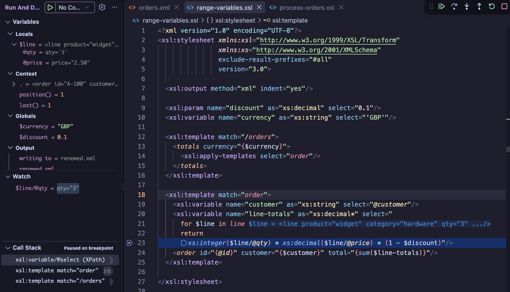
Paused within an XPath expression, with its range variable, the context, global
variables, inline values and the call stack
Scope
The extension supports the XSLT 4.0 and XPath 4.0 features that Saxon 13 implements. Its checks are
made as you type, without compiling the stylesheet - Saxon reports anything else when the stylesheet
runs. Schema-aware features aren't supported. The debugger needs SaxonJ 12 or later (any edition);
SaxonJS and SaxonC stylesheets can be run, but not debugged.
Edit XML, XSLT or XPath
If you're new to VS Code, see Using VS Code for a brief introduction.
For a comprehensive guide to Visual Studio Code's editor features, see the
Microsoft Visual Studio Code User Guide.
Language Specific Features
XSLT and XPath specific editing features are described in the Editing
XSLT/XPath page
of the documentation that you are reading now. More general XML editing features are described in
the Editing XML section.
The quickest way to run the stylesheet in the active editor is Quick Run:
press ⌘⌥R (Ctrl+Alt+R on Windows/Linux) or click
the play button in the editor title bar. The first run creates an XSLT task for you, which later runs reuse.
To step through the stylesheet instead, set a breakpoint and click the debug button in the editor title
bar, or press F5 when there's no launch.json - see the Debugger.
XSLT transforms are run using Visual Studio Code Tasks.
Before configuring an XSLT task you should ensure that you open a
Workspace folder (⌘O) from Visual Studio Code.
The configuration is saved in a tasks.json file in this workspace folder.
To create your first task, use the Run Build Task command (⇧⌘B).
As there is no currently configured task, you should be prompted to configure one
(if another extension inhibits this, run Configure Task instead). You
can then select the Saxon Transform (New) (SaxonJ), Saxon-JS Transform (New)
(SaxonJS) or SaxonC Transform (New) (SaxonC) task.
A task will be added to the tasks.json task with default properties. To further
configure the
task, these properties can be changed or other properties added. Auto-completion and hints are
provided to
assist in the task configuration. Next time you press ⇧⌘B your task
will be run
in a Task tab in the Terminal window (toggled with ⌘J).
More on running XSLT
XSLT tasks are explained in full on the Tasks page. More
general
information can be found in the Visual Studio Code Tasks
documentation.
What's New
Highlights of the features added in releases 2.0 and 2.1:
Release 2.1
Step-through debugging - debug stylesheets with SaxonJ
(any edition, including Saxon-HE): breakpoints with conditions, hit counts and logpoints, stepping
through templates, functions and multi-line XPath expressions - including inline functions - and the
variables, context item and output so far, as you go
Tracing values with xdm:trace() -
trace a value anywhere within an XPath expression: like trace(), it returns the value
unchanged, but writes it formatted as xdm:debug() does. Wrap with
xdm:trace() adds it around a selected expression, and Remove xdm:trace() - keep the
expression removes the call and its other arguments, leaving just the expression
Find Nodes with XPath - run XPath expressions on
an XML file from a query file below it, with the XPath editor's checks and auto-completion: the nodes
found are listed to step through, and values are shown after each expression. Replaces Goto
XPath
AI assistants - the problems of every
stylesheet open in an editor are kept up to date, not only those of the active one, so an assistant
such as Claude Code or GitHub Copilot sees the problems of the stylesheets it changes - and the
extension can run in Visual Studio Code's Agents
window
Release 2.0
Full language support for XSLT 4.0 in Saxon 13 - type-aware
auto-completion, checks, hover help and refactoring for the XSLT 4.0 and XPath 4.0 features Saxon 13
implements: new syntax and item types, keyword arguments and optional parameters, xsl:switch,
and documentation notes with xsl:note
Code Documentation -
documentation within xsl:note elements provides
hover assistance using tags based on xqdoc
along with Markdown descriptions. In an XSLT 3.0 stylesheet, xsl:note needs Saxon PE/EE
12.8 or later and the XSLT.validation.xslt30ItemTypesAndNotes setting.
Records and Enums - auto-completion, checks, hover
help and refactoring for XPath 4.0 record and enumeration types, from map constructors to
xsl:switch cases
JSON and JNodes - XPath 4.0 path expressions
on JSON, with auto-completion, checks and hover help for steps on JNodes with a record type, and
JNode paths shown by xdm:debug()
Quick Run - run the active stylesheet with a shortcut or
the toolbar button, without configuring a task first - with SaxonJ, SaxonJS or the new
SaxonC support
Inferred imports - the top-level
stylesheet of a module is found from the workspace, without opening it first, and the new
XSLT Imports view shows its tree of imports and includes
XML Catalogs - resolve the href of
xsl:import and xsl:include, e.g. the http: URI of a shared library, to a
local file with an OASIS XML catalog - also passed to Saxon when a stylesheet is run
Editing - signature help and richer hover help
for functions and templates, more auto-completion, and the new
Wrap with... refactoring
Print debugging - one auto-completed
xsl:message for all the in-scope variables, formatted and colored with
xdm:debug()
Features
The extension's features at a glance, grouped by task. Each one links to the part of this guide that
describes it.
Visual Studio Code is a lightweight but powerful source code editor which runs on your desktop and
is
available for Windows, macOS and Linux. It comes with built-in support for JavaScript, TypeScript
and Node.js and has a
rich ecosystem of extensions for other languages...
The User Interface
Visual Studio Code's user
interface
has a different look and feel to that of legacy XSLT editors. The Command Palette, along with
keybindings to
most common commands, play a significant role in providing a clearer environment to work in. User
interface clutter is significantly
reduced by eschewing previous designs which depended on a set of toolbars, each with an abundance of
buttons.
The application menu bar and associated dropdown menus usefully group the more
essential actions for managing your code.
The View menu is particularly useful as it logically sets out the large set of
view-configuration commands.
The sections below introduce you to the fundamental parts of the user interface from the perspective
of an XSLT/XPath developer.
The Command Palette
A principal part of Visual Studio Code's user interface is the
Command
Palette,
triggered
by the keyboard shortcut ⇧⌘P.
The Command Palette shows all available commands in a dropdown
list. The list of commands is
filtered as you type. The most recently used commands are shown at the top of the list.
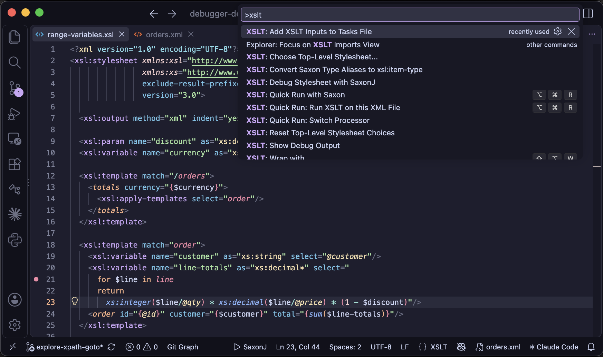
VS Code's command palette - built in commands are supplemented by specialist XSLT/XML commands.
Opening Workspace Files
The File: Open Folder command is used to select the starting 'Workspace' folder to
be used by VS Code.
More folders can be added to the Workspace subsequently using the Workspaces: Add folder to
workspace
command.
The keyboard shortcut ⌘P provides quick-access to all Workspace files
from a pick-list.
'Fuzzy-matching' allows you to type in just a part of the filename to filter the pick-list files.
Keyboard Shortcuts
While the Command Palette provides convenient access to features you should find that keyboard
shortcuts are
more effective for commands you use most
frequently.
The keyboard shortcut for commands is shown alongside each listed command in the Command Palette.
Not all
commands
have key bindings, but these can be configured using the command
Preferences: Open Keyboard Shortcuts
(⌘K⌘S). See:
Key Bindings for Visual Studio Code
Settings
By adding or modifying Visual Studio Settings, using the Preferences: Open User Settings
command,
you can customize a range of editor and extension features to meet your needs.
See the Settings section for details on some of the more important
settings for
developing in XSLT and XPath.
Install the XSLT/XPath Extension
Extensions are managed in the Extensions view (⇧⌘X) of the Side Bar.
Type XSLT XPath in the Extensions view search bar and, on the XSLT/XPath for
Visual Studio
Code entry, press the install button.
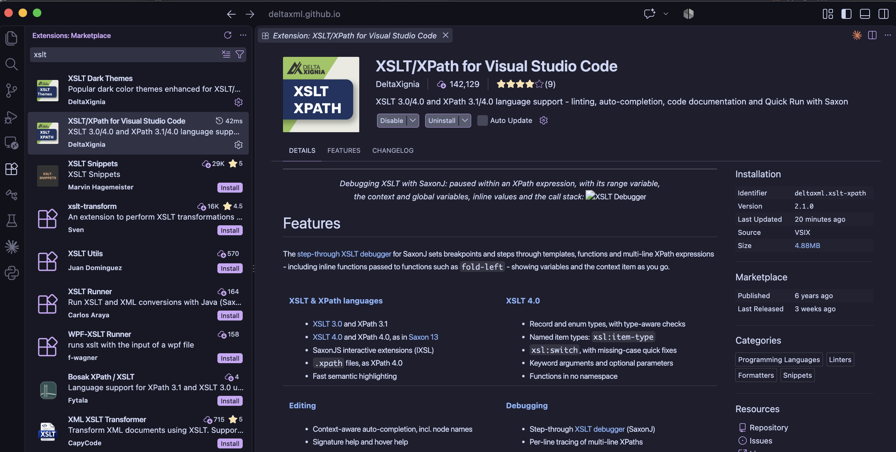
Color Theme Extensions
Visual Studio Code includes a small set of light and dark color themes. Alternative color themes are
installed as extensions. The number of available themes can be overwhelming,
but VS Code has a built-in Theme Preview feature and there are websites like vscodethemes that provide
a preview before installing the theme.
The XSLT Dark
Themes extension provides
a set of popular dark color themes specially enhanced for XSLT and XPath
Viewing HTML Output
When your XSLT generates HTML, you can view the result in Visual Studio Code's
integrated browser, with no
extension needed. When a transform writes an HTML result file, the notification that the task has completed
has an Open in Browser button, as well as Open for the file's source. You can
also choose Open in Integrated Browser from the editor title bar of an HTML file, or from its
context menu in the Explorer. With the
workbench.browser.autoReloadOnFileChange setting, the page reloads each time the transform
writes the result file again - so you can edit the stylesheet, run it with
Quick Run, and see the updated output alongside the XSLT.
Settings
Visual Studio Code's settings let you tailor your working environment to fit requirements for specific
languages or extensions, or to suit your own preferences.
A general guide to settings is provided by the Visual Studio Code documentation:
User and Workspace Settings.
This page lists the XSLT/XPath extension's own settings, and the editor settings of most interest for XSLT
and XPath.
Creating User and Workspace Settings
From the Command Palette (⇧⌘P) you can either invoke
Preferences: Open User Settings or Preferences: Open Workspace Settings. Editor
settings can also be applied in a language-specific way: for this, use the command
Preferences: Configure Language Specific Settings.
Settings are either edited in the Settings form or in a JSON editor. Open the JSON editor by clicking the
Open Settings (JSON) button at the top right of the Editor Group. This opens the
corresponding settings.json file directly.
User settings apply wherever you use VS Code, so they suit paths on your own computer, such as the Saxon
jar. Workspace settings are saved in the project's .vscode/settings.json and apply to everyone
who opens the project, so they suit settings a team shares, such as an XML catalog or XSLT packages.
XSLT/XPath Extension Settings
To list the extension's settings in the Settings editor, type XSLT in its search box. All of
them are listed below, with their defaults. The sections after the tables describe the most important ones.
Running and debugging
Setting
Default
What it does
XSLT.tasks.saxonJar
-
The path of your Saxon jar file, needed to run or debug stylesheets with SaxonJ - see
The Saxon jar.
XSLT.tasks.quickRunProcessor
"xslt"
The processor Quick Run uses: "xslt" (SaxonJ),
"xslt-js" (SaxonJS) or "xslt-c" (SaxonC). Switching processor in Quick Run
saves the choice here.
The folder containing the SaxonC command-line executable (Transform or
Transform.exe) - see SaxonC tasks.
XSLT.tasks.saxonCLicenseFileLocation
-
The path of SaxonC's saxon-license.lic file, passed to SaxonC as
--licenseFileLocation: - see Licensing.
XSLT.tasks.saxonCLibraryPaths
-
More folders to search for SaxonC's native libraries. The lib folder beside the
executable is always included - see
Native library path.
XSLT.tasks.htmlParserJar
-
The path of the nu.validator
htmlparser jar, added to SaxonJ's classpath for XSLT 4.0 stylesheets, for Saxon's
parse-html() function.
XSLT.debug.openOutput
false
When debugging, open the output written so far beside the stylesheet, at the first pause where
there is some - see Output while debugging.
Editing and checking
Setting
Default
What it does
XSLT.resources.catalog
""
An OASIS XML catalog file, for resolving the href of xsl:import and
xsl:include - also passed to Saxon - see XML catalog.
XSLT.resources.xsltPackages
-
The files for xsl:use-package names - see XSLT packages.
XSLT.resources.inferParentFromWorkspace
true
For a module that another stylesheet imports or includes, find that stylesheet from the
workspace's files, so references to its declarations are resolved without opening it first - see
Inferred imports.
XSLT.resources.useSourceFile
"latest"
Completion of element and attribute names in XPath: "latest" suggests the names that
can occur at that point in the path, from the XML context file; "none" suggests the names
already used in the stylesheet - see
IntelliSense for XPath locations.
XSLT.validation.externalFunctionPrefixes
[]
Prefixes of functions the processor provides, such as Java extension functions - calls of
functions with these prefixes aren't checked. The quick fix for a function that isn't found adds its
prefix - see Java extension functions.
XSLT.validation.xslt30ItemTypesAndNotes
false
Allow XSLT 4.0 named item types and xsl:note in XSLT 3.0 stylesheets, for Saxon PE and
EE 12.8 or later - see below.
The Saxon jar
To run or debug stylesheets with SaxonJ - Saxon for Java - set XSLT.tasks.saxonJar to the full
path of your Saxon jar file, usually as a user setting, since the path is specific to your computer. Any
Saxon edition works, including Saxon-HE. The Debugger needs Saxon 12 or later,
and a Java runtime must be on the PATH:
On Windows, write each \ in the path as \\, as JSON requires - e.g.
"C:\\saxon\\saxon-he-12.9.jar". For Saxon-PE or Saxon-EE, keep the licence file,
saxon-license.lic, in the same folder as the jar.
XSLT tasks refer to the setting as ${config:XSLT.tasks.saxonJar}. For downloading Saxon and
Java, see SaxonJ tasks.
XSLT packages
To allow XSLT package names to be resolved to file paths, package details should be added to the setting
XSLT.resources.xsltPackages. Sample XSLT package settings:
To resolve the href of xsl:import and xsl:include - and the URIs of
fixed-namespaces - with an OASIS XML catalog, and pass the catalog to Saxon when a stylesheet is
run, set XSLT.resources.catalog to the catalog file's path, relative to the workspace folder.
See XML Catalogs.
"XSLT.resources.catalog": "catalog.xml"
Task types
The extension provides a task type for each Saxon processor - xslt for SaxonJ,
xslt-js for SaxonJS and xslt-c for SaxonC - and all three are enabled by default.
To stop a processor's tasks being offered, for example in Run Build Task, turn off its
setting:
Saxon PE and EE 12.8 or later, run with syntax extensions, accept XSLT 4.0's named item types and
xsl:note in a stylesheet with version="3.0". To edit such stylesheets with the
same support as for XSLT 4.0, enable the setting XSLT.validation.xslt30ItemTypesAndNotes - it's
off by default. For a team, add it to the workspace settings, in the project's
.vscode/settings.json:
"XSLT.validation.xslt30ItemTypesAndNotes": true
With the setting, in an XSLT 3.0 stylesheet:
xsl:item-type declarations are accepted, with record(...) and
enum(...) types - which can also be used directly in as attributes
the record and enumeration type support applies: completions of
record fields, map keys and enumeration values, checks of map constructors, lookups and values, hover
help, and renaming a record field
Other XSLT 4.0 and XPath 4.0 features - such as xsl:switch, keyword arguments and
fn(...) types - still need version="4.0", and are reported as errors in an XSLT
3.0 stylesheet.
Without the setting, xsl:item-type and record and enumeration types are reported as errors in
an XSLT 3.0 stylesheet, and an xsl:note gets a warning unless it's excluded with
use-when="false()", as an XSLT 3.0 processor reports XTSE0010 for it.
To run the stylesheets, Saxon needs syntax extensions: the --allowSyntaxExtensions:on option on
the command line, or allowSyntaxExtensions="true" in a Saxon configuration file. The
extension's XSLT tasks and Quick Run enable it
with the default "allowSyntaxExtensions40": "auto" task property, for Saxon PE and EE.
Converting Saxon type aliases
Saxon's earlier syntax for named types - saxon:type-alias, tuple(...) types and
~name for a reference to a type alias - is ignored by Saxon 12.8 and later, which only report
the references. The linter warns about a saxon:type-alias, and the command
XSLT: Convert Saxon Type Aliases to xsl:item-type - also the warning's quick fix - converts
them in all the workspace's files, shown for review in the refactor preview first:
tuple(t: xs:integer, label?: xs:string) becomes
record(t as xs:integer, label? as xs:string)
as="~dfx:bounds" becomes as="dfx:bounds"
A type alias with an extensible tuple type, e.g. tuple(a: xs:string, *), isn't converted - nor
is one that references it - as XSLT 4.0 has no extensible record types. These are listed after the
conversion, to convert by hand.
General Settings For XSLT
Default Editor Settings for XSLT, XPath and XML
The extension sets these VS Code editor settings for the xslt, xpath and
xml languages - for .xsl, .xslt, .xpath and XML files. As
they're set for each language, they don't affect files in other languages. Any of them can be changed in a
language-specific setting, e.g. "[xslt]": { "editor.tabSize": 4 } - see
Creating User and Workspace Settings.
The extension also defines how the editor treats XSLT files in ways that aren't settings, so they can't be
changed:
Comments - Toggle Block Comment (⇧⌥A)
wraps the selection in <!-- and -->. In .xpath files it uses
XPath's (: and :).
Auto-closing - typing {, [, (, a quote or a
backtick adds the closing character. So does &, which adds ; for an entity
reference, and (:, which adds : to start an XPath comment.
Surrounding - typing one of these characters with text selected surrounds the
selection with the pair, e.g. selecting $total and typing ( gives
($total).
Words - a prefixed name such as xsl:template, a variable reference
such as $total-price, and an attribute name test such as @select each count as
one word - for example, when VS Code finds the word at the cursor for word-based suggestions.
Folding regions - <?region?> and
<?endregion?> processing instructions mark a region that can be folded - see
Folding.
Code Formatting
The following settings directly affect code formatting in the XSLT/XPath extension:
The editor.formatOnSaveMode setting can be used to only format XSLT lines changed since the
last commit on Git.
Syntax Highlighting
Syntax highlighting for XSLT and XPath is achieved using Visual Studio Code's
Semantic Highlighting
tokens alone. Almost all other languages in Visual Studio Code use a
TextMate Grammar
for tokens, which may be supplemented by Semantic Highlighting.
If XSLT and XPath are not syntax highlighted in a
Color Theme, you can explicitly enable
Semantic Highlighting with the setting:
"editor.semanticHighlighting.enabled": true
The XSLT Dark Themes
extension provides a selection of popular dark color themes, enhanced for XSLT/XPath.
Screenshot of Gruvbox Theme extended for XSLT
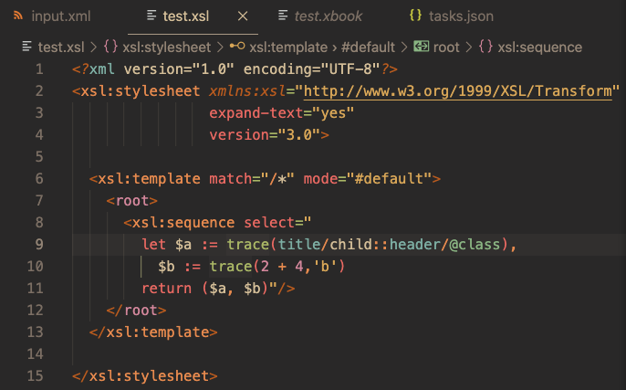
X Gruvbox Material Dark theme
Word Separators
The editor.wordSeparators setting affects how the full 'word' is selected when you double-click
on a part of the word. The characters listed are used as word separators. Typically in XSLT, you do not want
characters like - and . treated as word separators, as these characters are valid
within a QName like an attribute name or a variable name.
The Agents Window
Visual Studio Code's Agents window only runs the extensions on a list chosen by Microsoft, and the
XSLT/XPath extension isn't on it yet - so, there, XSLT files have plain XML highlighting, with none of the
extension's features. To run the extension in the Agents window, add this to your user settings:
The Agents window uses its own profile of extensions, so an extension you've disabled elsewhere - such as
Red Hat's XML extension - may be enabled there. See AI
Assistants.
Emmet Snippets
Emmet Snippets provide a convenient
shorthand for inserting a number of literal result elements and attributes into your XSLT in one go. For
example, entering:
To enable Emmet snippets for XSLT, add the following setting:
"emmet.includeLanguages": {
"xslt": "xml"
}
Editing XML
XSLT developers benefit from a set of XML editing features that are also available for any XML file.
These general purpose features are described here.
XML Elements
Rename Tag
As you edit the start tag name of an element, the corresponding end tag name is changed at the same time to
keep the XML well-nested.
Self-Close Element
To convert an element with a start-tag and end-tag to a self-closed element: With the cursor immediately to the
left of the > at the end of the start-tag, type
/. Any element contents and the
end tag will be deleted automatically:
<d><para/>test</para</d>
--> <d><para/></d>
Rename all elements with selected name
Select the element tag name you want to rename by double-clicking it, then press (⇧⌘L). This selects
all matching tag names so you're in a multi-cursor edit mode. As you edit the tag name you selected all
matching tag names are edited also. When done, press Escape to exit multi-cursor edit.
Auto tag-close
Element tags are auto-closed when typing </ when an element is unclosed.
Note that this feature is only enabled when the VS Code user-setting Format on Type is set (indentation is fixed at the same time).
Auto-Completion
Outside of the auto-complete (intellisense) features for XSLT and XPath, a small set of snippets for general purpose XML elements is accessible
from the auto-completion list:
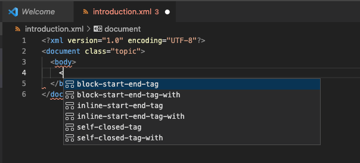
After a < within an element, the tag snippets insert an element with a placeholder for its name,
which is used for both the start and end tags:
block-start-end-tag - start and end tags on separate lines, with the cursor on the indented line between them
inline-start-end-tag - start and end tags on the same line, with a placeholder for the text between them
self-closed-tag - a self-closed element
Each has a -with variant, such as block-start-end-tag-with, that also inserts an attribute.
Before the root element of a file, the XML Root Element Snippet inserts an XML declaration and a root element
with an attribute and a child element.
With the cursor in the element start tag where you wish to add the attribute, press ⌃Space
and select attribute to insert the code snippet:
name="value"
Edit the name and then press Tab to edit the value.
Emmet
Emmet can be used to insert XML snippets using a shorthand notation. Emmet should be enabled in user settings.
See the Settings section for an example.
Well-Formed XML Checks
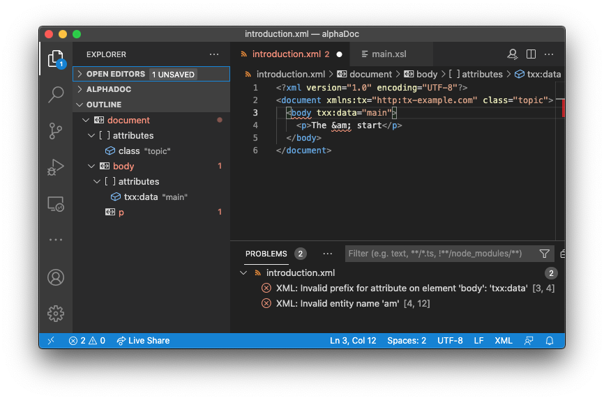
As you edit an XML file, the syntax is checked for any well-formedness errors. Any problem tokens are highlighted with
a squiggly underline in the editor. To see a description of the problem, hover over a highlighted token. To help navigate
between problems, the Problems view (press ⇧⌘M to toggle) shows a list of XML syntax
problems. Problems are also highlighted in the Outline View. Selecting a Problems view list item, or Outline View node will
navigate you to the corresponding token in the XML editor.
Entities
An XML or XSLT file can declare entities in its DOCTYPE's internal subset, to use as references such as
&company;:
<!DOCTYPE xsl:stylesheet [
<!ENTITY company "DeltaXignia Ltd">
]>
Each reference is checked: it must be one of the predefined entities - <,
>, &, " and ' - a
character reference such as  , or an entity the internal subset declares. When the
DOCTYPE names an external DTD, or the subset uses a parameter entity reference such as
%chars;, any entity name is allowed, as its declarations can't all be seen.
Type & to auto-complete an entity name: the declared entities, with their values, and the
predefined entities
Hover over a reference to see its entity's value, or the file of an external entity - or, for a
character reference, the character's code point, such as U+00A0
Go to Definition (F12) on a reference goes to its
<!ENTITY> declaration
In the DOCTYPE, the names of declared entities are colored as references are, and quoted values as strings.
XML Formatting
When you have an XML file open, normal XML formatting features are available. With typical hand-edited XML,
only the indentation is changed by the formatting. However, if no newline characters are found at the start of the XML file,
it is assumed the contents are system generated and newline characters are added for elements that are not mixed content.
The formatter observes the normal rules for whitespace preservation in XML. So xml:space attributes affect
whether indentation is preserved. Whitespace in CDATA sections and 'significant' whitespace in content inferred
to be mixed content is also preserved.
XML attributes on newlines and multi-line attribute value are indented by the XML formatting provider to reflect the level of nesting.
The XML: Format XML with newlines inside mixed-content command, from the Command Palette
(⇧⌘P), formats the whole file with a newline added before each start tag and end tag that
doesn't already start a line, and indents the result - including inside mixed content, where whitespace is otherwise preserved.
Tab on an Empty Line
In an XML or XSLT file, pressing Tab on an empty or whitespace-only line, such as one you've
clicked on, indents the line for its context, as if you had just pressed Enter, with the
cursor at the end of the indentation. Elsewhere, or where the line is already indented that far,
Tab works as normal. The key binding is for the
Tab: Indent an Empty Line for Its Context command, and can be changed in the
Keyboard Shortcuts editor.
XML Element Selection
The XSLT/XPath extension provides a set of commands for selecting an element.
These commands can be invoked from the Command Palette (⇧⌘P), or from the
XML Selection submenu of the editor's context menu (right-click), which also shows their
keyboard shortcuts. From the keyboard, XML: Select Element... (⇧⌘2)
shows the same commands in a quick pick. On Windows and Linux, the shortcuts use Ctrl+Shift instead
of ⇧⌘, for example Ctrl+Shift+0.
Select current element - ⇧⌘0 extend selection to include containing element's start/end tags
Select parent element - ⇧⌘9 extend selection to include parent element's start/end tags
Select first child element - ⇧⌘8 select the first child element's start/end tags
Select following element - ⇧⌘7 select next sibling's start/end tags
Select preceding element - ⇧⌘6 select previous sibling's start/end tags
The submenu and quick pick also have Find Nodes with XPath... and Add XPath
Location to Queries (⌥G / Alt+G) -
see Find Nodes with XPath.
Editing XSLT/XPath
With DeltaXignia's XSLT/XPath extension
, Visual Studio Code is a fully featured
XSLT 3.0 editor, with support for the XSLT 4.0 and XPath 4.0 features implemented in Saxon 13.
Standalone XPath 3.1 and XPath 4.0 files are also fully supported. Visual Studio Code's rich ecosystem
is now available to XSLT and XPath developers.
The documentation here focuses on XSLT and XPath language features. More general XML features are
covered on the Editing XML page.
Help on navigating code in the editor is provided in the Code Navigation page.
Syntax Highlighting
Eva Dark Theme
For improved performance and precision, this extension avoids using the default
but problematic TM Grammar.
Instead we use Visual Studio Code's
Semantic Highlighting introduced in 2020.
For color themes extensions you should explicitly enable Semantic Highlighting. See
the Settings page for more information.
Github Light Theme
The extension provides syntax highlighting for XSLT instructions, XML Literal Result Elements, XML attributes, XML character references, CDATA sections
and all tokens within XPath expressions. XPath expressions within Attribute Value Templates (AVTs) and
Text Value Templates are syntax highlighted also.
XSLT/XPath Dark Color Themes
The plethora of VS Code themes will highlight XSLT/XPath very well using Semantic Highlighting fallbacks for language-specific tokens.
There is however a XSLT Dark Themes
extension that enhances a set of popular dark themes specifically for XSLT and XPath:
Darcula From IntelliJ
Gruvbox Material Dark
Iceberg
Nord
Tokyo Night Storm
Zen
Formatting
Two commands are provided for formatting XML, XSLT or XPath expressions:
Format Document(⇧⌥F) - Format the entire active file.
Format Selection(⌘K ⌘F) - Format the selected content.
As well as explicitly invoking commands, formatting can be triggered as you type,
when you save a file, or when you paste content from the clipboard. The following settings control this:
editor.formatOnType - indents a new line as you press Enter, and
indents and completes an end tag as you type </.
editor.formatOnSave - formats the file when it is saved.
editor.formatOnPaste - formats the pasted content.
editor.formatOnSaveMode - with the modifications setting, only the changed code is formatted on save.
The XPath formatter indents code blocks within {}, [] and () bracket-pairs.
Indentation is also adjusted for if/else blocks and range-variable blocks.
Folding
Folding with this extension uses indentation to determine fold regions.
To set a region code-folding block, surround it with <?region?> and <?endregion?> processing instructions.
You may optionally include a label for the processing instructions, for example:
<?region modeA?>
...
<?endregion modeA?>
For more detail and a full list of Folding-related actions see the
Folding section in Visual Studio Code's User Guide.
Imports and Top-Level Stylesheets
The functions, templates, variables and other global declarations of a stylesheet's imported and included
modules are used throughout the editor: by auto-completion, hover and signature help, go to definition, find
references, symbol renaming and the linter.
A 'non-standalone' module - one that's imported by a parent stylesheet - often relies on declarations that only
the parent imports. Without knowing the parent, those references can't be resolved: they're missing from
auto-completion and hover help, and the linter reports spurious problems that may obscure real ones.
With inferred imports, the top-level ('parent') stylesheet that imports or includes the active
module, directly or indirectly, is found and imported along with the module's own imports, so those references can
be resolved.
A parent stylesheet opened recently in Visual Studio Code is used first. Otherwise, the parent is found from the workspace's
XSLT files, which are scanned in the background the first time they're needed, so the parent doesn't have to be opened
first. The scan only reads the href attributes of xsl:import and xsl:include
instructions, and is kept up to date as files change. Where a module is imported by more than one stylesheet, the one in the
nearest folder is used. The workspace scan can be turned off with the XSLT.resources.inferParentFromWorkspace
setting.
To use a different top-level stylesheet - for example, one of two that import the same modules - run
XSLT: Choose Top-Level Stylesheet... from the Command Palette, or the button in the title bar of the
XSLT Imports view. The list shows the top-level stylesheets that import or include the active module, directly or
indirectly: the one chosen is used for all the modules of its tree. Automatic goes back to the
nearest folder, and Browse... picks any stylesheet, for the active module alone. The choices are saved
for the workspace, and XSLT: Reset Top-Level Stylesheet Choices clears them all. The XSLT Imports view
marks a chosen stylesheet chosen, rather than inferred.
The XSLT Imports view
The XSLT Imports view in the Explorer shows, for the XSLT module in the active editor, its top-level
stylesheet - marked inferred when it was found from the workspace - with its tree of imports and includes. The
tree is expanded down to the active module, which is marked current, and clicking a module opens it. The tooltip for
a module lists any other stylesheets that import or include it.
The ▶ button on the top-level stylesheet runs it with Quick Run, using the current XML
context file - whichever module of its tree is being edited.
The XSLT Imports view in the Explorer, with the ▶ Quick Run button for the top-level stylesheet.
Intellisense (Auto Complete)
Intellisense suggestions include all in-scope XSLT and XPath symbols from xsl:accumulator names
to xsl:variable names, to anonymous XPath function parameters. There is intellisense
also for XSLT and XPath functions - help for built-in functions is shown alongside the suggestions list. Symbols from
included/imported files are included in the suggestions list.
Hover Help and Signature Help
Hovering over a function call shows the function's signature and description. This works for
built-in functions, with a link to the function's definition in the W3C specification, and for user-defined
xsl:functions, including those in included and imported stylesheets. Hovering over the name of an
xsl:call-template shows the named template's parameters.
Hovering over a mode name, in an xsl:mode, xsl:template or
xsl:apply-templates, shows where the mode is applied from across the stylesheet's modules: the template
rules of other modes, named templates and functions with an xsl:apply-templates for it - see also
Checks on modes.
While typing the arguments of a function call, signature help (parameter hints) shows the function's
parameters, with the current parameter highlighted. Signature help is also shown for the
xsl:with-param children of an xsl:call-template. Signature help can be triggered
manually with ⇧⌘Space.
In an XSLT 4.0 stylesheet, a documentation note on a function or
template is included in its hover help and signature help.
Intellisense for XPath Locations
An XML source file is used for context to provide XML node-names when editing XPath location steps.
This is initially the last non-XSLT file opened in Visual Studio Code. When the context file is set, the status-bar
for the XSLT file editor will show the context filename. The label [XML context file]
is shown if the context file has not been set, and [no XML context] if 'none' was picked.
The same file is the XML source for Quick Run.
Locking the context file
To lock the auto-completion context file to a specific file, click on the status-bar item
for the context file. You can then select from the list of recently opened XML files
or pick a different file using the system's file explorer dialog.
Variables and XPath Locations
XPath is evaluated as you type so node-names in the auto-completion list are filtered to be just
those that are possible given previous XPath steps such as axes and node-name tests. If an XPath location
expression starts with a variable that also contains an XPath location, that context from that variable
is also used to limit the node-names shown in the auto-completion list.
Triggering the auto-complete list
For XSLT intellisense, the < character triggers suggestions. XSLT instruction suggestions
fit the context of the cursor location.
On accepting a suggestion a Code Snippet is inserted
which will include common attributes for the selected instruction.
Intellisense is manually triggered with ⌃Space, with Tab or
Enter used to accept suggestions. These key bindings are fully customizable.
XPath Expressions and Operators
At the start of an XPath expression, the suggestions include snippets for the expressions with several
parts: for, let, some, every, if,
map and array - for example, let $x := … return …, with
placeholders for each part.
After an operand, such as a variable or a closing bracket, only the keyword operators that can follow are
suggested, such as cast as, instance of and union - and
return or satisfies within a for, let,
some or every expression. Short operators such as and,
eq and div are quicker to type, so aren't included.
Parameters for xsl:call-template
Typing < within an xsl:call-template suggests an
xsl:with-param for each of the called template's parameters that isn't passed yet, for
example xsl:with-param colour, which inserts the parameter name. The same applies to the
parameters of the enclosing xsl:iterate within an xsl:next-iteration. The
name attribute of an xsl:with-param also offers the parameter names.
XSLT Instruction Snippets
In an empty file, the xsl:stylesheet and xsl:package suggestions insert a
boiler plate stylesheet complete with namespace declarations, including one for your own functions - an
'identity transform', or one starting from xsl:initial-template. Each is available for
XSLT 3.0 and XSLT 4.0, shown on the right of the suggestion.
The xsl:message suggestions include snippets that use the xdm:debug() function to
show the names and values of in-scope variables and parameters - see Print Debugging.
More Snippets
You can define your own snippets in Visual Studio Code in a declarative way, without writing an extension. See the Visual Studio Code
documentation:
Create your own snippets.
Emmet Snippets provide a useful shorthand for inserting literal result elements. They can be enabled for XSLT
in Visual Studio Code Settings.
Bracket Matching
Matching brackets in XPath expressions are highlighted when the cursor is near one of them. You can jump to the matching
bracket with ⇧⌘\
Symbol Renaming
The Rename Symbol command F2 (available in the context-menu) updates all in-scope usages of the symbol - across all
imported stylesheet modules. Press ⇧Enter to preview the updates or Enter
to perform updates immediately.
Code Refactoring
Code refactoring features are provided via VS Code's
Quick Fix (⌘.) feature and the
Refactor command:
xsl:function - full refactor and xsl:function - partial refactor - extract an
xsl:function from selected XSLT instructions
xsl:function (XPath) - full refactor and xsl:function (XPath) - partial refactor - extract an
xsl:function from a selected XPath expression
xsl:template - extract an xsl:template from selected XSLT instructions
xsl:variable - extract an xsl:variable from a selected XPath expression
Wrap with... (⌥⇧W) - wraps the selected instructions, or the element whose
start tag is at the cursor, in an instruction such as xsl:if, xsl:choose or
xsl:for-each, or a literal result element - chosen from a list of the instructions allowed at that point,
with the recently used ones first. The selected lines are indented within the new instruction, and the cursor is
placed in its first attribute, such as test or select
Extract record type and Use record type - XSLT 4.0, for a map constructor
or xsl:map, see Records and Enums
Add documentation note - XSLT 4.0, with the cursor on the start tag of an xsl:function
or xsl:template, see Code Documentation
An available refactoring for a selection is indicated by a light-bulb💡 adjacent to the selection. Clicking on the 💡 will display the available refactorings.
The light-bulb is only shown when the code selection is a valid expression or a set of XSLT instructions that would be valid inside the new component.
If you don't see the light-bulb when you expect to, check that the code selection completely encloses the XSLT instruction or XPath expression.
The name of an extracted new component should be changed with the Rename Symbol feature, this is automatically triggered when the new component is added.
After refactoring, the XSLT is updated to fix any context problems introduced when code is moved.
The new component has xsl:param instructions added to provide context-properties required.
For extract to xsl:function two modes are available (fully documented here):
full refactoring - fixes 'missing-context' problems by updating XSLT to reference the context-property parameters.
partial refactoring - highlights 'missing context' problems in the XSLT.
Refactoring with 'Extract to xsl:function' in full mode, referencing context-parameters $c.x, $c.p and $c.l
Quick Fixes
Some problems reported by the linter have a Quick Fix, shown with the 💡 light-bulb when the cursor is on the
problem:
include XSLT module for xdm:debug and xdm:trace and copy xdm-view library into
workspace - for the xdm:debug() or xdm:trace() function when the xdm-view library
isn't included, see Print Debugging
Don't report unknown 'prefix:' functions in this workspace - for a call of a function with a
prefix, such as an extension function, that isn't found; the prefix is added to the
XSLT.validation.externalFunctionPrefixes setting (in user settings when no folder is open), see
Java extension functions
Set 'htmlParserJar' in User Settings... - for the parse-html() function, which needs the
XSLT.tasks.htmlParserJar setting
Convert all Saxon type aliases in the workspace to xsl:item-type... - for a
saxon:type-alias, see Converting Saxon type aliases
Add missing record fields - for a map constructor or xsl:map without all the
required fields of its record type, see Records and Enums
Change to 'name' - for an unknown field of a record type, one for each field name
that could replace it
Add missing xsl:when cases with select and Add missing xsl:when cases with
content - for an xsl:switch on an enumeration type that doesn't test all its values, see
xsl:switch on an enumeration
Remove duplicate enum value - for an enumeration type with a duplicate value
Add missing @param, Add missing @field and Add missing
@variable - for a documentation note without an @param for each parameter, an
@field for each record field, or (in a module note) an @variable for each global
variable, see Code Documentation
Exclude with use-when="false()" - for an xsl:note in an XSLT 3.0 stylesheet, see
Notes in XSLT 3.0
Add mode="#current" (preferred) and Add mode="#default" - for an
xsl:apply-templates without a mode in a template rule with a mode, see
Checks on modes
XSLT Linter
The XSLT/XPath linter performs checks on your code as you type, performing symbol reference tests across all included modules.
Any problems are shown in the Problems Panel and also highlighted inline with a squiggly
underline for the specific token at issue.
All other symbol name references (xsl:accumulatorxsl:key etc.)
Function name and arity (number of params)
xsl:with-param names
File locations in xsl:importxsl:includexsl:use-package
Order of operators/operands in XPath
Matching of brackets in XPath
Presence of the context-item for expressions where it is required
XSLT instructions and their attributes, and their structure - for example an xsl:choose
without an xsl:when, or two xsl:with-param elements with the same name
Duplicate global symbol names
Attribute Value Template Syntax
Text Value Template Syntax
Item types on as attributes of XSLT instructions
Accumulator names in use-accumulators attributes, and accumulators not used by any use-accumulators attribute
Operators in patterns - or, and, eq or , outside a predicate or
function call, for example match="a or b" instead of match="a | b"
Duplicate keys in map constructors and in the xsl:map-entry children of an xsl:map
Braced URI literals, for example Q{http://example.com}name
The order of xsl:param, xsl:on-completion and xsl:next-iteration within xsl:iterate
XSLT 4.0: the @param tags of documentation notes, see Code Documentation
The linter follows the XSLT rules that affect which code is valid:
Names of functions, templates, modes and variables are matched by namespace across modules, so modules
may use different prefixes for the same namespace.
A module may use a prefix other than xsl for XSLT instructions, for example
xslt:template.
Forwards compatible mode: for an element with a higher version, an unknown XSLT element with an
xsl:fallback child, and an unknown attribute, aren't reported.
Simplified stylesheets: a literal result element with xsl:version as the outermost element.
A call of a function that isn't known is not reported when it's guarded by
use-when="function-available('name')".
Checks on modes
A large transform may run in many modes, and a template rule applied in the wrong mode fails silently. The linter
warns about:
An unknown mode - an xsl:apply-templates whose mode isn't declared
by an xsl:mode or used by any template rule, in all the stylesheet's modules - often a typo in the
mode name.
An xsl:apply-templates without a mode in a template rule with a mode - it applies
the default mode, not the template rule's mode. This commonly happens when a template rule is added for a new mode
and mode="#current" is forgotten. The quick fixes add mode="#current", or
mode="#default" to show that the default mode is intended. There's no warning when the template
rule's modes include the default mode - the unnamed mode, or the mode named by the innermost
[xsl:]default-mode attribute - or #all, nor for a template rule within an XSLT 4.0
xsl:mode, where the enclosing mode is the default.
XSLT 4.0: an xsl:mode with enclosed template rules but no name, and an enclosed
template rule with a mode or name attribute, or without a match.
Unused Variables
The linter detects unused variables and parameters declared in either XSLT or XPath expressions. These are highlighted by being 'grayed out' in
the editor. Global variables are shown as unused if they are not referenced in the current file, the 'unused' state is not affected by
imported stylesheets they may reference the same variable.
Compile-time and Run-time problems
The linter is designed to find most basic code problems due to typos or changes to referenced symbols.
When XSLT is run, an attempt is made to parse error messages from the Saxon XSLT processor
(shown in the Task tab of the Terminal View) so that the problem token is highlighted,
and the error message is shown in the Problems view.
You can quickly create a new XSLT file when adding a xsl:import, xsl:use-package or xsl:include XSLT instruction. Simply enter the file path
in the href, press ⌘+click and then, in the 'Unable to Open...' dialog press the Create File button.
Code Navigation
Visual Studio Code includes a compelling set of features for code navigation,
the language-neutral details are outlined here.
This page outlines code navigation from an XSLT and XPath development perspective.
File Navigation
While the Explorer View is used for workspace browsing, pressing ⌘P, for the Quick Open
command, provides a quick-pick list of available files that is filtered/highlighted as you type.
File tabs are arranged in one or more Editor Groups. Editor Groups are arranged either adjacent or above/below other Editor groups.
The same file may be open in more than one Editor Group. There are settings to control whether file tabs are scrollable or wrapped
within an Editor Group.
Hold ⌃ and press Tab for a list of files in an Editor Group. Keep pressing
Tab until you reach the file you want and then release ⌃ to open it.
Previous/Next Location
Many actions can be used to navigate you to a new location. Press ⌃- for Previous Location and ⌃⇧- for
Next Location. Locations may be in the same file or different files.
File Links
In XSLT, the href attribute values of xsl:import, xsl:include and xsl:use-package have a solid underline if the file path is resolved.
Press ⌘+Click on the file path to navigate to that file.
XSLT/XML Breadcrumbs
The Breadcrumb View, shown at the top of the editor, shows the current element or attribute location
within an XML or XSLT file with respect to ancestor elements. In XSLT Breadcrumbs, an identifier is often shown as well as the element name.
This may be for example the name of an xsl:variable or the mode of an xsl:template.
The symbol names are the same as those shown in the Outline view.
Clicking on a Breadcrumb item will show a dropdown Outline view which you can then navigate through with the mouse, touch or cursor keys.
Keyboard Navigation
Press ⇧⌘. (note the 'dot' character) to select the last Breadcrumb item and open with a dropdown outline.
You can then use cursor keys
to navigate the dropdown outline. Alternatively, press ⇧⌘; (note the 'semi-colon' character)
to select the last Breadcrumb item without a dropdown outline.
Use the ← and → keys to select a Breadcrumb item or the
↓ for the dropdown outline.
Outline View
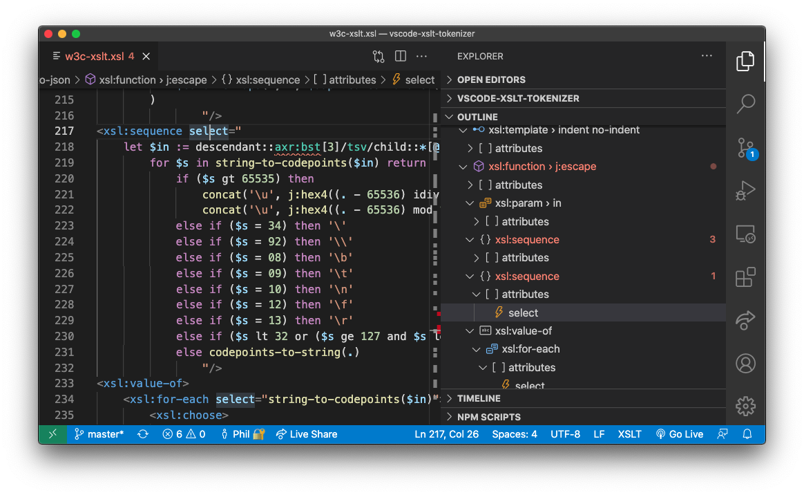
The Outline View (see right-hand panel) is a panel
that, by default, is positioned below
the File Explorer in the Primary Side Bar. This can be moved however into other panels such as the Secondary Side Bar (see Sidebars).
The Outline view renders the XML or XSLT document element hierarchy as a tree, symbol names in the tree include element identifiers such
as the mode for an xsl:template.
Symbols in the Outline View can be sorted by position, name or category. There's also a 'Filter on Type' mode that
filters the Outline View while you type in part of a symbol name.
Peek/Goto Definition
A symbol, such as a variable or function, is defined in one location in a stylesheet file, but used in other locations.
The Peek and Goto commands let you either view inline or navigate to the definition of a selected symbol.
Peek Definition
Invoke the Peek Definition command by pressing (⌥F12) on any symbol name such as a variable or function name.
This command embeds a view of the definition inline avoiding the context-switch arising from the Goto Definition command.
The inline definition view permits quick edits of the definition also. Press Escape to close the definition view.
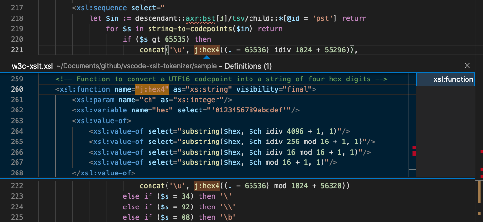
Goto Definition
Invoke the Goto Definition command by pressing (F12) on any symbol name such as a variable or function name.
This command navigates you to the location of the symbol definition (for example, the corresponding xsl:variable instruction),
opening the containing stylesheet file in the editor group if not already open.
Goto (Peek) References/Find All References
This feature is about navigating to references to symbols, in contrast to the previous section that covers navigating to symbol definitions.
The Peek and Find All commands let you either view inline or navigate through all the references (including the definition) of a selected symbol.
Goto (Peek) References
Invoke the Goto (Peek) References command by pressing (⇧F12) on any symbol name such as a variable or function name.
This command embeds a view of the resolved references inline, use the cursor keys to navigate between each reference listed.
The inline view permits quick edits of the reference also. Press Escape to close the references view.
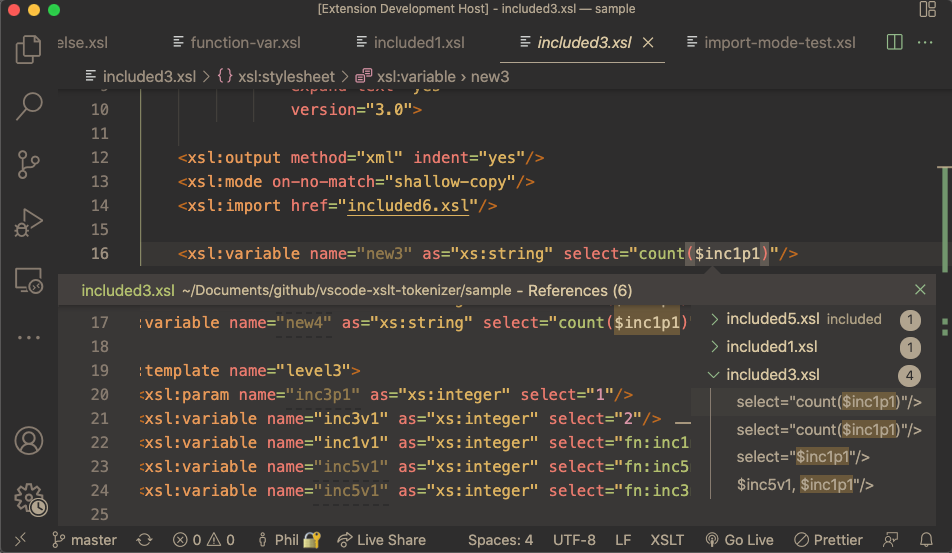
Find All References
Invoke the Find All References command by pressing (⌥⇧F12) on any symbol.
A References Panel, shown in the application Side Bar, lists all references, grouped by their stylesheet module.
Use the cursor keys to move through the references and press Enter to open the editor in
the reference location.
After navigating to a reference or definition, you can quickly navigate to the location you were in using ⌃-
Call Hierarchy
Use the Show Call Hierarchy command (⇧⌥H, or from the editor's
context menu) on a call of a stylesheet function or named template, or anywhere within a template or
function, to see what calls it and what it calls. The Call Hierarchy view, in the Side
Bar, shows either:
Incoming calls - the template rules, named templates, functions and other
declarations (e.g. global variables) that call the function or named template, in all the stylesheet's
modules - each with its calls, to go to
Outgoing calls - the stylesheet functions and named templates that a template or
function calls, with xsl:call-template, a function call, or a named function reference
such as f:double#1
Expand an entry to see its own calls, and so on. Use the button at the top of the view to switch between
incoming and outgoing calls. Where functions or templates with the same name are declared in more than
one module, calls go to the one with the highest import precedence - the one Saxon uses.
A template rule is called by xsl:apply-templates, which depends on the node being processed
when the stylesheet runs, so template rules are shown as callers, but not as being called.
Goto Symbol
Use the Goto Symbol in Editor command ⇧⌘O for a filtered quick-pick list of symbols used
in the current editor.
The text you enter filters the list, the ↑ and ↓ keys navigate you through the symbol list, with the
current symbol item highlighted in the editor. Press Enter to navigate to the symbol in the current editor
or ⌘Enter to open an adjacent editor and navigate to the symbol there.
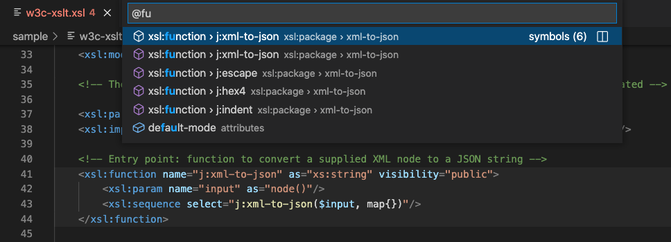
Find Nodes with XPath
In an XML file, to go to the nodes an XPath expression finds - such as //section[@id] or
/root/section[2]/para[3] - write it in the query file and run it: the nodes are listed as
references are, to step through. ⌥G / Alt+G
adds the location of the node at the cursor to the query file. See
Find Nodes with XPath.
XSLT Imports View
For the XSLT module in the active editor, the XSLT Imports view in the Explorer shows its top-level
stylesheet with its tree of imports and includes, expanded down to the active module. Click a module in the tree to open it.
The view is collapsed initially - click its title in the Explorer to expand it. See
The XSLT Imports view for details.
Refactoring
The Refactoring section of the Editing XSLT/XPath part
of this guide describes XSLT refactoring in general. This section provides additional detail on the
'extract to xsl:function refactor..
Introduction
There are two available modes for extracting selected code to an xsl:function: full and partial.
In this refactor, required context properties must be passed as parameters when the new xsl:function is invoked, this is because
context properties are cleared inside an xsl:function.
Partial Mode
In the partial mode, required parameters are passed to the new function, but code in not refactored to
reference the new parameters. Instead, the 'missing-context' properties are highlighted as problems.
Full Mode
The full refactor fixes 'missing-context' properties by refactoring the code to reference the
relevant parameters.
A Sample Refactor
The screenshots below show sample code refactored to extract to an xsl:function.
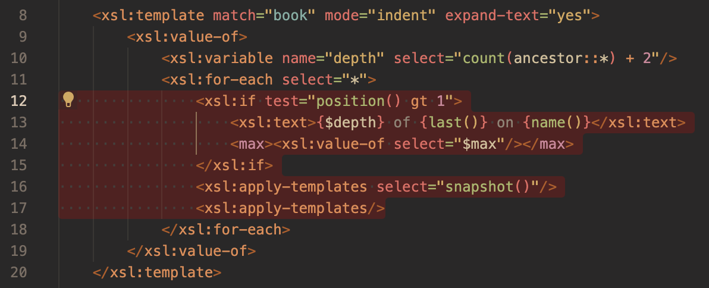
1. The original code selected for refactoring
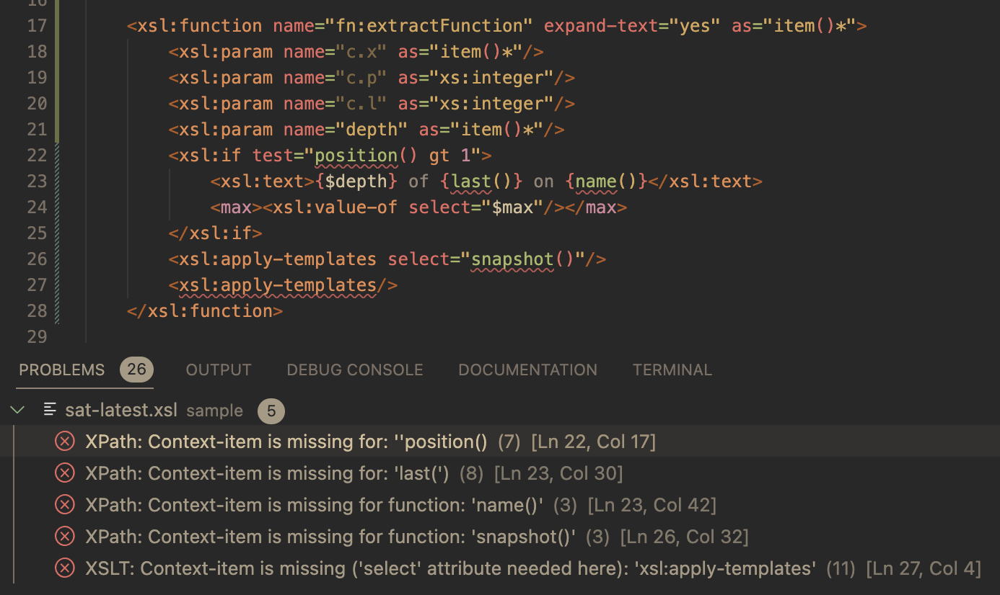
2. After a partial refactor: 'missing-context' problems are highlighted
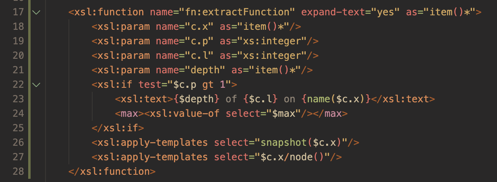
2. After a full refactor: there are no 'missing-context' problems as code is updated in the refactor to let parameters provide the context
Known Restrictions
The code selected for a refactor is important. For example,
in many cases it may be more effective to extract an entire xsl:merge instruction instead of
a set of instructions within the child xsl:merge-action instruction.
There are known limitations in what can be achieved when passing context to an xsl:function, these are outlined below.
Please note also that in general there will be cases where, because of context, it would be advisable to
extract to xsl:template instead of xsl:function.
Potential ‘missing context’ problems for the xsl:call-template instruction are highlighted but not fixed.
In such cases, it’s advisable to undo the refactor and use the extract to xsl:template refactoring instead.
The regex-group($n) expression (where $n is not a literal integer) with ‘missing context’ is a special refactoring case.
It is resolved to $r.group($n) where $r.group references a context xsl:param of type
map(xs:integer, xs:string), The number of items in the generated code for $r.group
is set to 99
this number should be corrected manually to the expected number of regex groups given the regex used.
Context Properties
The table below lists the context properties, along with the corresponding xsl:function parameter names that will,
if required, be created for an xsl:function refactor.
Context property
Parameter
current() or '.'
c.x
position()
c.p
last()
c.l
current-group()
g.current
current-grouping-key()
g.key
regex-group($n)
r.group($n)
current-merge-group()
m.current
current-merge-key()
m.key
current-merge-group($name)
m.groups($name)
XML Catalogs
An XML catalog maps the URIs used in a stylesheet to the files they're resolved to. With
a catalog, a stylesheet can import a shared library by a fixed name, such as
http://example.com/xslt/strings.xsl, wherever the library's files are kept - only the
catalog changes when they move. Catalogs are an OASIS standard,
XML Catalogs 1.1,
and Saxon supports them with its -catalog option.
The XSLT/XPath extension uses a catalog to resolve the href of xsl:import and
xsl:include - so the declarations of a module imported by its catalog name are known to
the linter, auto-completion, hover help and go to definition - and passes the same catalog to Saxon
when a stylesheet is run.
Catalogs are useful when:
a team shares XSLT libraries across projects, and each project keeps its copy of a library in a
different place
stylesheets import libraries by http: URIs, and the files should be read locally -
for speed, or to work offline
libraries are reorganised, or a new version is tried, without editing the stylesheets that
import them
Set XSLT.resources.catalog to the path of the catalog file - relative to the workspace
folder, or with ${workspaceFolder}. For a team, add it to the workspace settings, in the
project's .vscode/settings.json:
"XSLT.resources.catalog": "catalog.xml"
The setting names one master catalog. It can hand lookups on to any number of other catalogs, with
nextCatalog entries - for example, a catalog for each
library.
When there's no setting, and the root of the workspace folder has a catalog.xml that's an
XML catalog, you're asked whether to use it: Use adds the setting to the workspace
settings, and Don't Ask Again is remembered for the workspace.
Changes to the setting, and to the catalog files, are picked up straight away.
Catalog files
A catalog is an XML file whose root element is catalog, in the namespace
urn:oasis:names:tc:entity:xmlns:xml:catalog. Each entry maps a URI - the name used in an
href - to the URI of a file. A relative path in a catalog is relative to the catalog file
itself.
With this catalog, <xsl:import href="http://example.com/xslt/strings.xsl"/> imports
lib/strings/strings.xsl. The name needn't be a real web address: it's an identifier for the
library.
The extension uses these entries:
uri - maps one URI, its name, to the URI of a file, its uri
rewriteURI - maps every URI that starts with its uriStartString, replacing
that part with its rewritePrefix, and keeping the rest - e.g. a whole folder of
libraries:
<rewriteURI uriStartString="http://example.com/lib/" rewritePrefix="lib/"/>
maps http://example.com/lib/strings/strings.xsl to
lib/strings/strings.xsl
uriSuffix - maps every URI that ends with its uriSuffix to the URI of a
file
nextCatalog - another catalog file, its catalog, to try
when this catalog has no entry for a URI
group - groups entries, e.g. to give them an xml:base - which can also be
on the catalog element or an entry, to set the base URI that its relative paths are
resolved against
In each catalog, an exact uri entry is used first, then the rewriteURI entry
with the longest uriStartString that matches, then the uriSuffix entry with the
longest uriSuffix - and only if none matches, the nextCatalog entries, in
order. An href is looked up as it's written, and then, if it's relative, as the absolute
URI it resolves to.
In the editor
For an xsl:import or xsl:include whose href the catalog resolves:
the module's declarations are known, as for a module imported by its file path
Cmd/Ctrl+click on the href opens the module's file
hover help on the href shows how the catalog resolved it: the entry that matched, and
the catalog files it was found through - e.g. Resolved by the XML catalog: the
uri entry for http://example.com/xslt/strings.xsl in
catalogs/libraries.xml, via catalog.xml
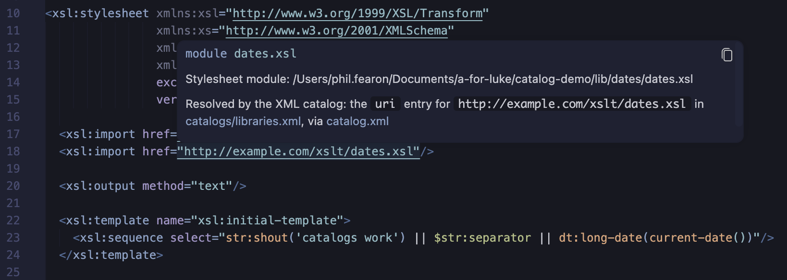
Hover on a catalog-resolved href, showing the entry and the catalog chain.
An href that's a URI the catalog doesn't resolve to a file is reported, naming the
catalog:
an http: or https: URI is a warning - its declarations aren't known, but
Saxon will try to fetch it when the stylesheet is run
another URI, e.g. urn:example:strings, is an error - Saxon can't resolve it either
In the Problems panel, the problem has a link to the catalog - and Cmd/Ctrl+click on the
href opens the catalog, to add an entry for it. With no catalog, the problem suggests
using one.
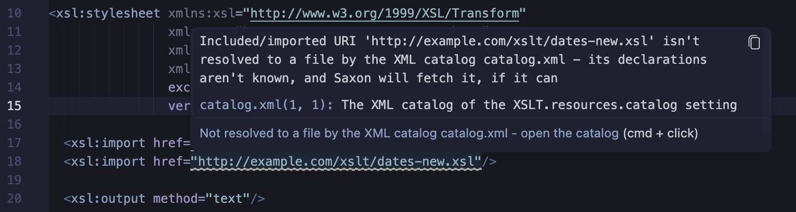
The warning for an http: href that isn't in the catalog.
Catalog files in the editor
In a catalog file - one that the catalog of the setting reads, or any XML file with a
catalog root element in the catalog namespace:
the uri of each entry, and the catalog of each nextCatalog
entry, is a document link, so you can Cmd/Ctrl+click from the master catalog, through the
catalogs, to a library file
an entry whose file - or, for a rewritePrefix, folder - isn't found has a warning,
e.g. after a library has moved
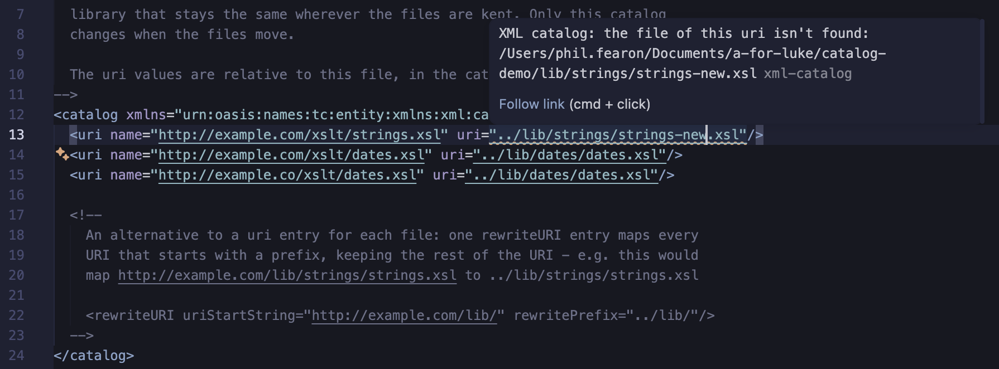
A catalog file, with a warning for an entry whose file isn't found
Running stylesheets with the catalog
The XSLT tasks for SaxonJ (xslt) and SaxonC
(xslt-c) - including those Quick Run creates - pass the
catalog of the setting to Saxon, with the -catalog option, so the stylesheet is run with
the same imports as it's edited with. A task's own catalogFilenames property is used
instead, when it has one:
The setting names one master catalog - use nextCatalog entries for others.
The editor uses the uri, rewriteURI, uriSuffix and
nextCatalog entries - not system, public or
delegate entries, which are for DTDs and other external entities. Saxon uses them all.
Saxon-JS tasks aren't passed the catalog.
Catalog demo
The catalog-demo
folder is a small, complete example: a master catalog that hands lookups on to a secondary catalog,
which maps the URIs of two XSLT libraries, in different folders, to their files - and a top-level
stylesheet that imports both libraries by those URIs. Clone the repository, or copy the files, to try
it.
catalog-demo/
├── catalog.xml master catalog: a nextCatalog entry for catalogs/libraries.xml
├── catalogs/
│ └── libraries.xml secondary catalog: a uri entry for each library
├── lib/
│ ├── strings/strings.xsl imported as http://example.com/xslt/strings.xsl
│ └── dates/dates.xsl imported as http://example.com/xslt/dates.xsl
├── main.xsl imports both libraries by their catalog names
└── .vscode/settings.json "XSLT.resources.catalog": "catalog.xml"
How http://example.com/xslt/strings.xsl is resolved:
catalog.xml has no entry for it, so its nextCatalog entry is tried:
catalogs/libraries.xml
libraries.xml has a uri entry with that name, whose
uri is ../lib/strings/strings.xsl - relative to
libraries.xml
so the import is lib/strings/strings.xsl
Try it
Open the catalog-demo folder in VS Code (File > Open Folder...), so
that its .vscode/settings.json applies
Open main.xsl: there are no problems, and hover help on str:shout shows
the function's signature, from strings.xsl
Hover on an href, to see the entry that resolved it - and Cmd/Ctrl+click it, to open
the library file
Open catalog.xml, and follow its links to catalogs/libraries.xml and the
library files
Run main.xsl with Quick Run: the result is e.g. CATALOGS WORK! | Wednesday 30
September 2026
Then:
Change an href to a URI that isn't in the catalog, e.g.
http://example.com/xslt/missing.xsl, to see the warning - and Cmd/Ctrl+click it to open
the catalog
Move lib/dates to another folder: its entry in catalogs/libraries.xml
has a warning. Update the entry's uri - main.xsl doesn't change
Replace the two uri entries with the rewriteURI entry in the comment in
libraries.xml, and change the hrefs in main.xsl to match
Delete .vscode/settings.json and reopen the folder, to be offered
catalog.xml
From the command line, the same catalog is passed to Saxon with -catalog:
Quick Run is the fastest way to run an XSLT stylesheet, without first creating a task
by hand. It can run the stylesheet with any of the three Saxon processors: SaxonJ
(Java), SaxonJS (JavaScript) or SaxonC (native C/C++). It reuses the
same command-line arguments the corresponding XSLT task would use, but takes the stylesheet and XML
source directly from the editor rather than requiring a pre-configured tasks.json entry.
(1) XSLT in active editor, (2) the Saxon processor, (3) the XML context file - Click the play button to run
Running a stylesheet
With an XSLT file open in the active editor, invoke Quick Run in one of three ways:
Press ⌘⌥R (Ctrl+Alt+R on Windows/Linux)
Click the play button in the editor title bar - its tooltip names the processor currently in use,
for example Quick Run with SaxonC
Run Quick Run with Saxon from the Command Palette
The stylesheet is the active editor's file. The XML source is the current
XML context file - the same file used to provide XML
node-names when auto-completing XPath location steps, shown in the status bar. This means the context
file now serves two purposes: XPath auto-completion, and as the Quick Run source document.
An XML context file must be set before Quick Run can be used - unless the stylesheet declares an
xsl:initial-template, which Quick Run then starts from (see
Starting from xsl:initial-template below). Each processor also needs its
own setup:
SaxonJ - the XSLT.tasks.saxonJar setting must point at your Saxon
jar file. See the Saxon (Java) setup section on the XSLT
Tasks page.
SaxonJS - requires a NodeJS installation; the
xslt3 package is run using NPX. See the Saxon-JS Tasks section on the
Tasks page.
SaxonC - the XSLT.tasks.saxonCPath setting must point at the folder
containing the SaxonC Transform executable (Transform.exe on Windows). See the
SaxonC Tasks section on the Tasks page for
setup details, including native library paths and licensing.
Running a module that another stylesheet imports
A module that another stylesheet imports or includes may use functions, variables or templates declared in
other modules of that stylesheet. In the editor, these references are resolved through the top-level
stylesheet - see Inferred Imports - but the module can't be
compiled, and so can't be run, on its own.
When you Quick Run such a module, it's checked first - with the modules it imports and includes - and if it
depends on the top-level stylesheet, you're offered the choice:
Run top-level stylesheet - runs the top-level stylesheet instead, with the same
XML context file and processor
Run Anyway - runs the module itself
The choice is remembered for the module until Visual Studio Code is restarted. A module that can be run on its
own is run straight away, with no prompt. The top-level stylesheet can also be run from the ▶ button in the
XSLT Imports view, whichever of its modules is being edited.
Choosing the processor: SaxonJ, SaxonJS or SaxonC
Quick Run uses SaxonJ by default. When an XSLT or XML file is active, the processor currently selected is
shown in the status bar, for example ▶ SaxonJ. To switch
processor, use any of the following:
Click the processor name in the status bar
Hold ⌥ (Alt on Windows/Linux) and click
the play button in the editor title bar - while the key is held, the play button changes to a
'switch' button
Run XSLT: Quick Run: Switch Processor from the Command Palette
Each of these shows a list of the three processors to pick from, with the current one marked. The play
button's tooltip and the status bar update straight away.
The choice is stored in the XSLT.tasks.quickRunProcessor setting, whose values are the
task types: xslt (SaxonJ), xslt-js (SaxonJS) and xslt-c (SaxonC).
You can also edit this setting directly, either as a User setting or as a Workspace setting - for
example, to always use SaxonC for one project. Switching processor updates the setting where it is
already defined (the workspace folder, then the workspace), otherwise it updates your User settings.
First use: a task is created for you
The first time Quick Run is used for a given stylesheet/context-file pairing, a real task is added to
your workspace's tasks.json file (creating the file if it doesn't exist yet) - not just an
ephemeral, one-off run. The generated task:
is a normal task for the selected processor: an xslt task for SaxonJ, an
xslt-js task for SaxonJS or an xslt-c task for SaxonC
is labelled from the stylesheet and context file names, for example demo with books.xml.
SaxonJS and SaxonC task labels have the processor name added, for example
demo with books.xml (SaxonC)
uses the xslt-xpath.pickResultFile command for its result path, so you're prompted to
choose (or reuse a recently used) output location - the same 'recent files' behaviour described in the
Variable References in Tasks section of the XSLT Tasks page
refers to the processor's setting (for example ${config:XSLT.tasks.saxonCPath}) rather
than copying its current value, so the task keeps working if you later change the setting
includes an entry in its parameters array for each stylesheet parameter that must be
set - including those declared in imported or included stylesheets. Parameters with a default are
left out, so the stylesheet's own defaults apply
Required parameters
A stylesheet parameter must be set when it has required="yes", or when it has no default
(no select attribute or content) and an as type that doesn't allow an empty
sequence - for example as="xs:string" or as="element()+", but not
as="xs:string?". A parameter without an as attribute defaults to a
zero-length string, so it isn't added.
The value of each one comes from an input that's added to the inputs of
tasks.json, so you're asked for it each time the task runs:
You can type a value, or pick one you've used before for a parameter of that name - the last one used
is first, so Enter uses it again. Press Escape
to cancel the run. Once you've settled on a value, you can replace the ${input:...}
reference with the value itself. Parameters with the same name, in different tasks, share an input.
Subsequent runs
Once a task exists for a stylesheet/context-file pairing, Quick Run re-runs that same task rather than
creating another one. This means you can freely edit the generated task afterwards - change a parameter
value, adjust the result path, add Saxon features or additional parameters - and Quick Run will keep
using your edits on every subsequent run, just like running any other task.
Editing the task
To go straight to the task for the stylesheet and the current XML context file, use
Edit Quick Run Task from the drop-down menu beside the editor's Run and Debug button. The
same link is in the tooltip of the XML context file in the status bar, and the command
XSLT: Edit Quick Run Task is in the Command Palette. This opens tasks.json
with the task highlighted - if there isn't a task yet, it's created first, as Quick Run would create it.
Debugging always uses the SaxonJ (xslt) task, so with SaxonJ selected the menu item is
Edit Quick Run and Debug Task (SaxonJ). With SaxonJS or SaxonC selected, there's a
separate Edit Debug Task (SaxonJ) item. When Quick Run or debugging first creates a task,
a notification also offers Edit Task.
For different sets of parameters, copy the task in tasks.json and give the copy a new
label. When more than one task is for the stylesheet/context-file pairing, Quick Run (and debugging)
asks which task to run - the tasks you've used most recently are listed first.
Tasks are kept separately for each processor. If you switch processor, the next Quick Run for the same
stylesheet/context-file pairing creates a new task for that processor; your existing tasks for the other
processors are left unchanged, and are used again if you switch back.
If you want a fresh task instead, either edit the existing one directly, or remove it from
tasks.json and Quick Run will create a new one next time it's used for that
stylesheet/context-file pairing.
Starting from xsl:initial-template
A stylesheet that declares an xsl:initial-template can be run with no source document at all.
When no XML context file has been set yet, Quick Run does this automatically. To keep running without a
source document once XML files are opened - which otherwise become the context file - click the XML
context file in the status bar and choose None, the last entry in the list of files. The
status bar then shows [no XML context].
With no XML context file, Quick Run starts the stylesheet from xsl:initial-template
(Saxon's -it command-line option) instead of applying templates to a source document. The
xsl:initial-template can be declared in the stylesheet itself or in any module it imports or
includes. If there isn't one, Quick Run reports an error and offers to pick an XML context file instead.
The task created for this has an empty xmlSource and an empty initialTemplate
property, and is labelled with the stylesheet name, for example
report with xsl:initial-template. It is kept separately from any task for the same
stylesheet that has an XML source, so you can switch between the two just by changing the context file.
None stays selected until you pick a file again - opening or viewing other XML files does not replace it.
While it is selected, XPath auto-completion has no source document to take element and attribute names from.
Running from an XML file
Quick Run can also be started from an XML file, to run a stylesheet on it without opening the stylesheet
first. With an XML file open in the active editor, invoke it in one of three ways:
Press ⌘⌥R (Ctrl+Alt+R on Windows/Linux)
Click the play button in the editor title bar
Run XSLT: Quick Run: Run XSLT on this XML File from the Command Palette
This shows a list of the XSLT tasks that can run on the file, grouped as:
tasks for books.xml (named after the XML file) - every task whose xmlSource is this file, for
any processor. This includes each task Quick Run has created for a stylesheet with this file as its
source, so any stylesheet you've already run on the file is one click away.
tasks for the current file - tasks whose xmlSource is
${file}, which Visual Studio Code replaces with whichever file is active when the task
runs. Use this for general-purpose stylesheets you want to run on any XML file.
Pick Stylesheet... - choose a stylesheet from the recently used list, from any
<?xml-stylesheet?> processing instruction in the XML file, or from the file explorer.
Quick Run then creates and runs a task for that stylesheet and this file, using the selected processor,
exactly as it would from the stylesheet itself - so it appears under tasks for books.xml
next time.
Each task is listed with its processor and stylesheet path, and you can type to filter on any of these.
If there are no matching tasks yet, Quick Run goes straight to picking a stylesheet. As with the
stylesheet's play button, holding ⌥ (Alt on
Windows/Linux) while clicking the XML file's play button switches the processor instead.
A task that runs on the current file looks like this:
{
"type": "xslt",
"label": "Summarise",
"saxonJar": "${config:XSLT.tasks.saxonJar}",
"xsltFile": "${workspaceFolder}/tools/summary.xsl",
"xmlSource": "${file}",
"resultPath": "${command:xslt-xpath.pickResultFile}"
}
The XML context file is remembered
Your chosen XML context file is now restored automatically when Visual Studio Code is reopened, rather
than defaulting back to the last XML file you happened to view. It's stored per workspace, separately
from the 'recently used' file list, so viewing other XML files - for example a transform's result - does
not change what gets restored. Choosing None is remembered in the same way.
If the context file has since been deleted or moved, Quick Run - and debugging - say so instead of
running, with a Pick XML Context File button to choose another.
Tasks
Visual Studio Code's Tasks include custom task types for configuring and running XSLT transforms with
SaxonJ (Java), SaxonJS (JavaScript) or SaxonC (C/C++). The Saxon XSLT processor is called via its command-line interface
from the Integrated Terminal
in Visual Studio Code.
Task configurations effectively control command-line arguments for the XSLT Processor. An attempt is made to parse any error messages
returned from Saxon, so that the position of any Saxon-reported errors in the XSLT can be highlighted.
XSLT is run or debugged using custom xslt, xslt-c or xslt-jsVisual Studio Code Tasks
for SaxonJ (requires Java and
Saxon installation), SaxonC
or SaxonJS (requires NodeJS installation) respectively.
Saxon (Java) setup
Ensure that you have a workspace folder
open in Visual Studio Code (use File > open... from the menu).
The configuration will be saved in a tasks.json file in this workspace folder.
If Java is not already installed, Java 1.8 or later can be downloaded and installed from here
If Saxon is not already installed, Saxon-HE can be downloaded and installed from here
Saxon (Java) tasks need the path to the installed Saxon jar file to be included in a property in your Visual Studio Code settings.
Invoke Preferences: Open User Settings from the Command Palette (⇧⌘P) and type
xslt to show a short-list of settings:
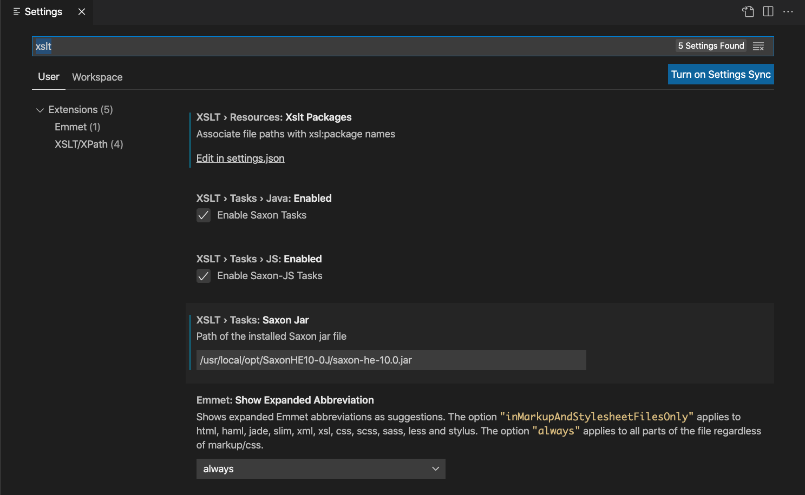
Enter the Jar file path in the Tasks: Saxon Jar property (see above)
Saxon-JS Tasks
Ensure that you have a workspace folder
open in Visual Studio Code (use File > open... from the menu).
The configuration will be saved in a tasks.json file in this workspace folder.
If NodeJS is not already installed, it can be downloaded and installed from here
Initialize NPM
in the current folder and then install the Saxon-JS package (xslt3) by running the following commands in the Visual Studio Code terminal (⌘J):
npm init -y
npm install --save-dev xslt3
SaxonC Tasks
The xslt-c task type runs XSLT transforms using
SaxonC, Saxonica's native C/C++ port of Saxon. Its
command-line arguments mirror the Saxon (Java) task closely, since SaxonC's Transform
command-line tool follows the same conventions.
Setup
Install SaxonC and note the folder containing its Transform (or
Transform.exe on Windows) command-line executable.
Set the XSLT.tasks.saxonCPath user setting to that folder.
Invoke Tasks: Run Build Task from the Command Palette (⇧⌘B)
and configure a new xslt-c task, following the same steps as for a Saxon (Java) task
described above.
Native library path (macOS/Linux)
Some SaxonC distributions are built without an embedded library search path, so the native shared libraries
alongside Transform - and any others it depends on - may not be found automatically. The
xslt-c task always searches the lib folder next to the configured
saxonCPath, and you can list additional folders (for example, a separately-packaged core
library) in the saxonCLibraryPaths task property, or the equivalent
XSLT.tasks.saxonCLibraryPaths user setting.
Licensing
If SaxonC reports No license file found - running with licensable features disabled, set the
licenseFileLocation task property (or the equivalent
XSLT.tasks.saxonCLicenseFileLocation user setting) to the path of your
saxon-license.lic file. This is passed to Transform as
--licenseFileLocation:, the same option Saxon (Java) tasks use.
To configure the initial task:
Invoke Tasks: Run Build Task from the Command Palette (⇧⌘B):
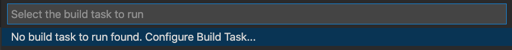
Press Enter to Configure Build Task:
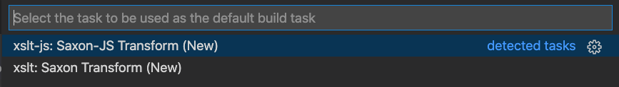
Select from the list (shown above) the template task for the processor you require:
Saxon Transform (New) for SaxonJ, Saxon-JS Transform (New) for SaxonJS
or SaxonC Transform (New) for SaxonC (you may see more task types in the list).
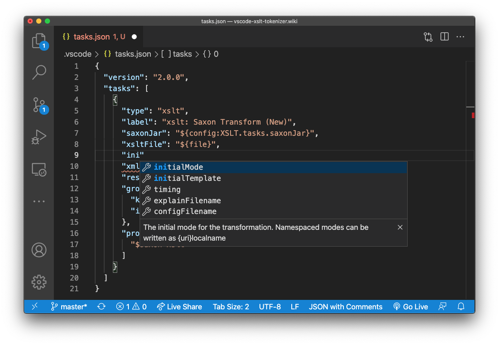
The tasks.json file will then be opened with a template task added for the task type specified.
The task shown above is for a SaxonJ (xslt) task. Edit this task to fit your XSLT transform requirement.
It's a good idea to change the label property (the value shown in the tasks list) to describe your XSLT transform.
Auto-completion with hints is available as you type.
The actual file type is 'JSON with Comments' so you can add comments and leave trailing commas etc.
You can create any number of tasks for different XSLT transform scenarios. Note that the group.isDefault
property controls which task is automatically launched when you next invoke
Run Build Task from the Command Palette or when using ⇧⌘B.
Save any changes to the tasks.json file ⌘S
Run the newly configured XSLT transform by invoking Run Build Task from the Command Palette or when using ⇧⌘B.
Variable References in Tasks
Visual Studio Code supports variable substitutions for Task configuration files.
Variable substitution uses the ${variableName} syntax. Commands that
return a string can be invoked via variable substitution: the boiler plate XSLT task uses the
${command:xslt-xpath.pickXsltFile} and ${command:xslt-xpath.pickXmlSourceFile}
variable references, and writes its result to ${workspaceFolder}/xsl-out/result1.xml.
User-input for file-selection within a Task
A set of 'Pick File' commands suitable for XSLT tasks is available to allow user-selected file paths to be used within an XSLT task. An example is shown below:
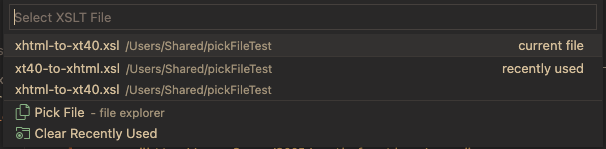
Each command prompts the user to select a file. This is from: the current file, a 'recent files' list for that command (optionally from a specified 'previous stage' command),
or from a 'Open File' or 'Save File' VS Code dialog as appropriate. The available commands are listed below:
Command
Description
xslt-xpath.pickFile
General file selection with arguments to provide custom behaviour.
This must be invoked with arguments that are supplied in the 'inputs'
property of the tasks.json file. Invoked by ${input:<input-id>}
xslt-xpath.pickXsltFile
Returns a user-selected XSLT file
xslt-xpath.pickXmlSourceFile
Returns a user-selected XML Source file
xslt-xpath.pickStage2XmlSourceFile
Returns a user-selected Stage2 XML source file
xslt-xpath.pickResultFile
Returns a user-selected result file
xslt-xpath.pickStage2ResultFile
Returns a user-selected result file for Stage2
A full list of variable references is given in Visual Studio Code's
Variables Reference
The 'pickFile' command
The general purpose command 'xslt-xpath.pickFile' is the base command for specific 'pick file' commands like 'pickXsltFile'.
After a task is invoked, the user is prompted to select a file for opening or saving. A Pick List is shown with options to select files in up to 5 ways:
the current file (if its extension is compatible with the extensions list)
from recently used (current stage) files - from list for the current label e.g. 'Select XSLT File'
from recently used (previous stage result) files - shows result files from a previous task
from the <?xml-stylesheet href="...?> href in the current file
from an 'Open File' or 'Save File' dialog
The 'recently used' file data is maintained per workspace and is restored when VS Code is closed and reopened. A 'clear recently used' option
is also listed when there are files already in the list.
The 'pickFile' command must be invoked from an 'input' property of a task, as it requires an 'args' argument. A sample 'inputs' property
can be added to the 'tasks.json' file with the XSLT: Add XSLT Inputs to Tasks File command.
Command Options for 'pickFile'
The 'pickFile' command's 'args' object has the following properties:
label - the prompt message for the user, also the identifier for the 'recently' used list
extensions? - an array of filter file-extensions (when set, a '*' option can also be selected from the dialog)
isResult? - causes the 'Save File' dialog to be shown when set true
prevStageLabel? - shows the recently used files for the specified label
prevStageGroup? - the group-name for the 'previous stage' files - default: 'recent files from previous stage'
xmlStylesheetPI? - set 'true' for pick-list to include a <?xml-stylesheet?> href from current editor
Sample input property definitions for the 'pickFile' command are listed below:
"inputs": [
/*
1. the specialist 'pickFile' command equivalents for the inputs defined here are:
"xsltFile": "${command:xslt-xpath.pickXsltFile}", // can select from current file - if xslt - or recently used xslt files
"xmlSource": "${command:xslt-xpath.pickXmlSourceFile}", // can select from current file or recently used stage1 source files
"xmlSource": "${command:xslt-xpath.pickStage2XmlSourceFile}", // can select from recently used stage2 source files or stage1 result files
"resultPath": "${command:xslt-xpath.pickResultFile}", // can save to recently used stage1 result files
"resultPath": "${command:xslt-xpath.pickStage2ResultFile}", // can save to recently used stage2 result files
2. these inputs invoke the 'pickFile' command with args for custom behaviour:
*/
{
/* --- Usage: ---
"xmlSource": "${input:xmlFile}",
*/
"id": "xmlFile",
"type": "command",
"command": "xslt-xpath.pickFile",
"args": {"label": "Select XML File", "extensions": ["xml", "xhtml", "svg"] }
},
{
/* --- Usage: ---
"xmlSource": "${input:xmlFile2}",
*/
"id": "xmlFile2",
"type": "command",
"command": "xslt-xpath.pickFile",
"args": {"label": "Select Stage1 XML File", "extensions": ["xml", "xhtml", "svg"], "prevStageLabel": "Select Result File", "prevStageGroup": "recent files from previous stage" }
},
{
/* --- Usage: ---
"xsltFile": "${input:xsltFile}",
*/
"id": "xsltFile",
"type": "command",
"command": "xslt-xpath.pickFile",
"args": {"label": "Select XSLT Stylesheet", "extensions": ["xsl", "xslt"], "xmlStylesheetPI": true }
},
{
/* --- Usage: ---
"resultPath": "${input:resultFile}",
*/
"id": "resultFile",
"type": "command",
"command": "xslt-xpath.pickFile",
"args": {"label": "Select Result File", "isResult": true }
}
]
Configuring more tasks
To create more tasks, just invoke Tasks: Run Build Task from the Command Palette
and choose the task type you need. Provided you've changed the label property from the template
task for that type, a new task will be created from the template task.
Visual Studio Code tasks are very flexible. You can combine XSLT tasks with other task types, for example, to run a shell command.
The dependsOn task property is used to chain tasks together. The Compound Tasks
section of the Visual Studio Code Tasks documentation
covers this concept in more detail.
XML catalogs
The xslt and xslt-c tasks pass the catalog of the
XSLT.resources.catalog setting to Saxon, with the -catalog option - unless the
task has its own catalogFilenames property. See XML Catalogs.
Java extension functions
An xslt task can run a stylesheet that calls Java code. Add the folder or jar with your classes to
the task's classPathEntries property. Saxon supports two kinds of Java extension function:
Reflexive - a namespace with a java: URI names a Java class, and the
functions in it call the class's methods, e.g. math:sqrt(2) with
xmlns:math="java:java.lang.Math". These need Saxon-PE or Saxon-EE.
Integrated - a class that extends Saxon's ExtensionFunctionDefinition,
registered by a Saxon configuration file. Set the task's configFilename property to the
file. These work with any Saxon edition, including Saxon-HE.
The debugger runs the stylesheet with the task's properties, so Java extension
functions work when debugging too - including in Watch expressions.
The linter doesn't check calls of a java: namespace's functions. For an integrated function, add
its prefix to the XSLT.validation.externalFunctionPrefixes setting - the quick fix for a
function that isn't found does this - and calls of functions with that prefix aren't checked.
The Visual Studio Code terminal
When you start a Task, it is run in a Task tab in Visual Studio Code's Integrated Terminal,
the Pane hosting the Terminal view is toggled with ⌘J.
The tab label reflects the Task configuration label property.
When a Saxon XSLT task is run, xsl:message output and any Saxon errors will be shown in the terminal window.
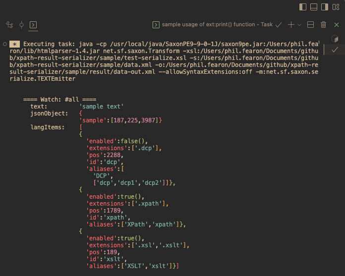
Debugger
XSLT stylesheets can be debugged with SaxonJ in VS Code's debugger: set breakpoints, step through
templates, functions and multi-line XPath expressions, and inspect variables, the context item and the
output written so far.
If you're new to debugging in VS Code, see
Debugging in the VS Code
documentation for the debug toolbar, views and keyboard shortcuts.
For debugging by adding xsl:message instructions to the stylesheet, see
Print Debugging.
Starting a debug session
Open the stylesheet and set a breakpoint - click in the margin to the left of a line number, or press
F9. Then start debugging in any of these ways:
the Debug Stylesheet with SaxonJ button in the editor title bar
XSLT: Debug Stylesheet with SaxonJ from the Command Palette
F5, when there's no launch.json - or the
Debug Stylesheet link in the Run and Debug view
The stylesheet runs as Quick Run runs it: with the XML context file, or
from xsl:initial-template when there's no context file. It uses the same Quick Run task, so
parameters added to that task also apply when debugging - if there's more than one task for the
stylesheet and context file, you pick which. When the stylesheet is imported or included by another,
you're offered the choice of running the parent stylesheet instead.
A Quick Run task includes the stylesheet's required
parameters, with values from tasks.json inputs. You're asked for these values when the
debug session starts, as when the task runs. If a task refers to an input that tasks.json
doesn't define, the session doesn't start, and you're offered Open tasks.json.
The Run and Debug View provides options for how to launch the debugger.
Launch configurations
With no launch.json, the Run and Debug view offers Debug Active
Stylesheet, and a Debug task label configuration for each
xslt task in tasks.json (see Tasks).
create a launch.json file adds these to a new launch.json.
To debug a task without a launch.json, choose XSLT (Saxon)... in the
Run and Debug view's dropdown, or use Debug: Select and Start Debugging
from the Command Palette, then the task's Debug task label. The configuration
stays selected in the dropdown, so F5 debugs that task again - whichever
file is open.
A launch configuration uses the xslt-saxon debugger type, with one of:
"quickRun": true - the stylesheet in the active editor, as Quick Run runs it
"task" - the label of an xslt task in tasks.json, whose
properties are used; properties set in the configuration override them
the same properties as an xslt task, such as xsltFile,
xmlSource, initialTemplate, resultPath and
parameters
"stopOnEntry": true pauses at the first instruction executed. In launch.json,
Add Configuration... offers four snippets: XSLT (Saxon): Debug Active
Stylesheet, Debug a Task, Debug Stylesheet (with a source
file) and Debug from Initial Template. See
Debug configuration
in the VS Code documentation for more on launch.json.
Breakpoints
A breakpoint can be set on a line where an XSLT instruction or a literal result element starts. A
breakpoint anywhere in a multi-line start tag is moved to the tag's first line.
Breakpoints can also be set inside a multi-line XPath expression - see
Stepping through XPath.
Conditional breakpoints and hit counts
Right-click in the margin and choose Add Conditional Breakpoint... - or right-click an
existing breakpoint and choose Edit Breakpoint:
Expression - an XPath expression, evaluated where the breakpoint is, with its
variables and context item, e.g. @customer = 'Grace' or $total gt 30. If
the expression raises an error, execution pauses and the error is shown.
Hit Count - 5 or ==5 (the 5th hit), >5,
>=5, <5, <=5 or %5 (every 5th hit).
With an expression too, only the hits where the expression is true are counted.
An expression and a hit count can be given for a logpoint too, to choose when
it writes its message.
Setting a conditional breakpoint with an XPath expression.
Logpoints
A logpoint writes a message to the Debug Console without pausing - print debugging without changing
the stylesheet. Right-click in the margin and choose Add Logpoint..., or edit a
breakpoint and choose Log Message.
Each {xpath} in the message is replaced by its value, evaluated where the
logpoint is, e.g. {$line/@product} costs {f:line-total($line)}. Values are formatted and
colored as xdm:trace() writes them, without the stylesheet including the xdm-view
library:
a node or JNode with its path above it, showing where it's from
a string quoted, and a value's type where it isn't obvious, e.g.
2026-10-27 (xs:date)
a map or array over several lines, e.g. order: {$order}
An expression can't contain braces, as in a map constructor.
Logging all variables:{$*} is a special case - it's replaced by the local
variables in scope at the logpoint, as xdm:debug-color() writes them: a banner with the
name of the template, function or instruction, then each variable's name and value, e.g.
order {@id}: {$*}. It's like an xsl:message with
xdm:debug-color(), but without changing the stylesheet. With Saxon 12, whose maps don't
keep their order, the variables may not be in the order they're declared.
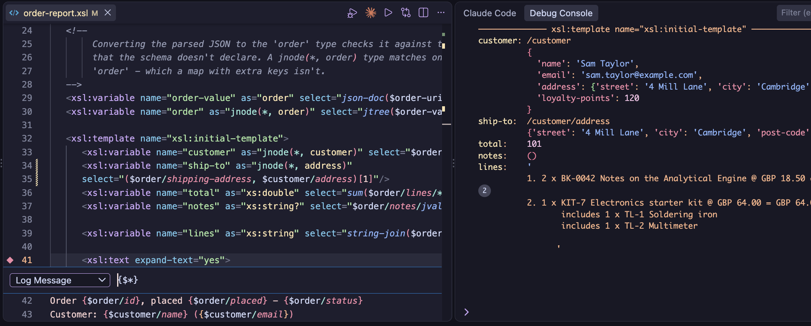
A logpoint with the message {$*}, and what it writes
to the Debug Console: a banner naming the template, then each local variable - JNodes with
their paths, maps over one or several lines, and an empty sequence as ().
Function and named-template breakpoints
To stop whenever a stylesheet function or named template is called, without finding where it's
declared, click + (Add Function Breakpoint) in the
Breakpoints view and enter its name. The function or template can be in any module of
the stylesheet, including imported and included modules. Execution stops at the start of the function
or template, where the Variables view shows its parameters - for a named template, these are the
values passed to it.
The name is written as it is where the function or template is declared, with
the same prefix, e.g. f:total or cell - or as an EQName, e.g.
Q{urn:f}total. A () after the name is allowed.
An arity selects one version of a function, e.g. f:total#2. With no
arity, every version of the function stops.
Conditions and hit counts work as for line breakpoints - right-click the
breakpoint and choose Edit Condition or Edit Hit Count. The
condition can use the parameters, e.g. $n = 2.
A name that isn't valid is shown as unverified straight away. A function or template that isn't in the
stylesheet - or a function with no version of the arity given - is shown as unverified once the
stylesheet has compiled; hover over the breakpoint for the reason. Template rules - templates with a
match attribute - aren't stopped at this way, even when they also have a
name: use a line breakpoint instead.
Pausing on errors
The Breakpoints view has two options for errors. Like the
No Template Matched option, they're listed once a debug session
has been started in the workspace:
Dynamic Errors (on by default) - pauses where a dynamic error that ends the
transform is raised, including xsl:message with terminate="yes". The
error's code and message are shown, and the variables at that point can be inspected.
Errors Caught by xsl:try (off by default) - also pauses at errors that an
xsl:try catches. This needs Saxon 12.5 or later.
The debugger paused on a dynamic error.
A static error - one Saxon finds when it compiles the stylesheet - can't be paused at, as the
stylesheet never runs. This includes a type error that Saxon can tell will always happen: for example,
an xsl:variable with as="xs:string" whose select is
count(...), which is always an xs:integer. The session then ends with a
notification that gives the first error and its line, and the errors are listed in the
Problems view.
Elements no template matched
When no template rule matches an element processed by xsl:apply-templates, XSLT's
built-in template rules apply: the element's text is written to the output, and its children are
processed. This is often intended - e.g. for a wrapper element - but it's also what happens when a
template's match pattern is wrong, e.g. for an element in another namespace, so the
expected template is never used.
With the No Template Matched option in the Breakpoints view (off by
default), execution pauses at the first element of each name, in each mode, that no template rule
matched. It pauses at the xsl:apply-templates instruction, in a call stack frame such as
no template matched: item (mode #default), whose context item is the element - so the
Context view, Watch and the Debug Console show and evaluate that element. If no
template has matched yet, from the start of the transform, the frame has no line.
Whether or not the option is on, when the transform ends the Debug Console lists the elements no
template matched, e.g. ▸ Built-in template rules applied to 37 elements no template
matched: item ×30 (mode #default), o:note ×7 (mode summary). Elements dropped by
a mode with on-no-match="deep-skip" are listed on a line of their own. Modes whose
on-no-match copies or skips elements otherwise - e.g. shallow-copy -
aren't included, as there that's the intent; with on-no-match="fail", it's a dynamic
error.
Stepping
The debug toolbar has the usual Continue (F5),
Step Over (F10), Step Into
(F11), Step Out
(⇧F11), Pause and Stop commands. In
XSLT terms:
Step Over goes to the next line in the current template or function, without
stopping in the templates and functions it calls - for example, with
xsl:apply-templates or xsl:call-template.
Step Into stops in each template rule, named template or function called, and
in a global variable when it's evaluated.
Step Out continues until the current template or function returns.
xsl:for-each, xsl:for-each-group, xsl:iterate and
xsl:analyze-string have their own entry in the call stack, and are stepped like calls:
Step Over runs all their iterations, Step Into stops in their body
for each item, and Step Out from their body goes to the line after them. A
breakpoint in the body still stops; after stepping over one by mistake, Step Back
goes back to it.
Stepping goes line by line: execution stops once each time it reaches a line, not once for each
instruction on it. A breakpoint in a loop stops once for each iteration.
The debug toolbar also has Step Back and Reverse Continue - see
Going back - and Show Debug Output - see
Output while debugging.
Stepping through XPath
A multi-line XPath expression in a select, test or value
attribute - or in xsl:map-entry's key, xsl:evaluate's
xpath, context-item or with-params, or the content of an XSLT
4.0 xsl:select - can be stepped through. An xsl:when's test is
stopped at where it's evaluated: only the tests reached, in order, until one is true. In XSLT 4.0, the
select of an xsl:when or xsl:otherwise, and an
xsl:if's then and else, are stepped through only when that branch
is taken; an xsl:record's attributes - its fields' expressions - are stepped through as the
record is built. Within
xsl:catch, the $err: variables can be used, as in Watch. An xsl:with-param's select is stepped through as part of the
instruction it's in, e.g. xsl:call-template. An xsl:sort's
select is stopped at for each item, as its sort key is computed - before the first item
is processed - with that item as the context item. Use Step Into at the instruction, or set a
breakpoint on a line of the expression. Execution stops on each line where a part of the expression
starts. A breakpoint on a line with only keywords such as then, else or
return, and no expression starting on it, is unverified.
Step Into goes through an expression when that shows more than its result: when it
binds variables (for, let, some or every), calls a
stylesheet function or an inline function, or has an if whose branches are on lines of their
own - execution then stops at the branch taken. Otherwise - for example, for comparisons joined by
or - Step Into steps over it, and the variable's value is shown when it's
in scope. A breakpoint on a line of the expression still stops there.
A simple map (!), a path step (/) or a predicate ([...]) is
evaluated for each item of the expression before it. A breakpoint on a line of its right-hand side, or
predicate, stops for each item, with that item as the context item and its position() and
last() in the Context section. Step Into goes through such
a loop only when what's evaluated for each item has something to show, as above - e.g. a function
call - so that it doesn't stop for each item of a long path. A function argument that Saxon evaluates
lazily - within the function, when it's first used - shows its context item, but
position() and last() as (not known).
The expression is evaluated separately, in the instruction's context, so that each part reports its
own line. It appears in the call stack as, for example, xsl:variable/@select (XPath), and
its result is shown in the Debug Console, e.g. ▸ $line-totals (xsl:variable/@select, lines
25-28) returned (6.75, 10.8, 15.75) - or the dynamic error it raised, e.g. one an
xsl:try catches. The instruction itself then runs as usual, but without stopping again in
the functions the expression calls, or writing their xsl:message output again - so each is
stopped in, and its messages written, once. The body of an
inline function is stepped through each time it's called - for example, by
fold-left().
Evaluation context, the call stack and the debug toolbar are shown when execution is paused.
Going back
The debug toolbar also has Step Back and Reverse Continue, for
going back to an earlier point in the transform without starting a new debug session:
Step Back goes to the line reached before, in the current template or
function - or, at its first line, to the line that called it.
Reverse Continue goes back to the last line with a breakpoint that was reached
(breakpoint conditions aren't checked), or to the start of the transform if there's none.
To go back, the debugger runs the transform again, from the start, to that point - quietly, and
stepping as before - then pauses there. Variables, the context item, Watch expressions and the call
stack are then as they were at that point, and stepping or continuing goes on from there.
xsl:message output and logpoint messages already shown in the Debug Console aren't
shown again.
Call stack
The Call Stack view has a frame for each:
template rule, with its match pattern and mode, e.g.
xsl:template match="order" mode="summary"
named template, e.g. xsl:template name="header"
function, by name and arity, e.g. f:line-total#1
global variable or parameter being evaluated, e.g. xsl:variable $orders
xsl:for-each, xsl:for-each-group, xsl:iterate or
xsl:analyze-string
instruction, with its select expression
XPath expression being stepped through, e.g. xsl:variable/@select (XPath)
Selecting a frame shows its location in the editor, and its variables in the Variables view.
Variables
The Variables view has four sections:
Locals - the parameters of the template, function or
xsl:iterate, then the variables in scope - from xsl:variable, and from
XPath for, let, some and every expressions,
including a positional at $pos variable. Tunnel parameters are shown as
$name (tunnel). A value that Saxon hasn't evaluated yet, and whose evaluation would
run stylesheet code - for example, with Saxon 12, the accumulator passed to a
fold-left function - is shown as (not evaluated yet), with a button to
evaluate it. Evaluating it runs that code straight away, without stopping at its
breakpoints. Inside an inline function, only the function's parameters, the variables from
outside it that it uses, and its own range variables are shown.
Context - the context item (.), position() and
last(), and where they apply, current-group(),
current-grouping-key() and each regex-group().
Globals - the global variables and parameters, sorted by name. A global variable
that hasn't been used yet is evaluated when it's shown. While a global variable is being
evaluated, one that might use it - directly, or through a function - isn't evaluated, and is shown
as (not evaluated yet): evaluating it would be a circular reference.
Output - which result is being written to, or that a temporary tree is being built
(for example, an xsl:variable's content), and the end of each output written so
far.
Nodes, maps, arrays and sequences can be expanded. An element shows its attributes, then its child
nodes, with the line number of the element in its source document. Long values are truncated, and an
expanded value shows at most 1000 items.
Inline values
While paused, the value of each variable declared earlier in the current template or function is shown
at the end of the line where it's declared. This applies to xsl:variable and
xsl:param, and in XPath, to let, for, some and
every variables and inline function parameters.
The VS Code user setting debug.inlineValues turns inline values on or off. A change
applies from the next debug session, not the one that's running.
Empty steps in paths
While paused, in the paths and lookups before the line paused at, the first step whose result is
empty is faded - like an unused variable - so it's easy to see where a path stops matching. For
$doc/orders/order/item, when $doc has no orders element,
orders is faded. A step (after / or //), a predicate
([...]) and a map or array lookup (?key) can each be faded. Hovering over
it says why it's empty:
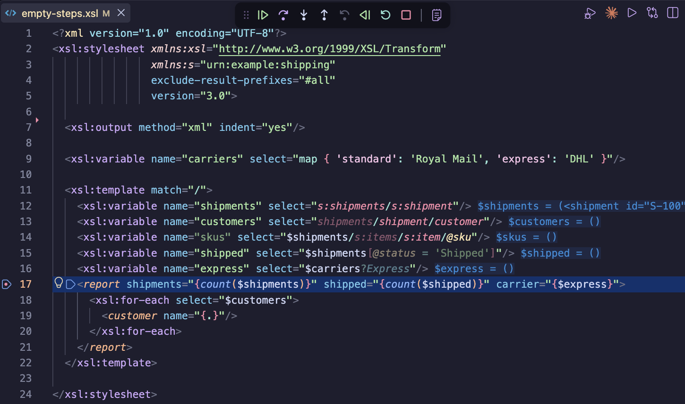
Paused at line 17, the first empty step of each path is faded: shipments,
which has no prefix for the shipping namespace; s:items; a predicate that no
shipment matches; and the lookup ?Express, as the map's key is
express.
for a step, how many nodes there were to select from, and any with the same name in another
namespace, or the same name with different case - otherwise their names
for a predicate, how many items it removed
for a lookup, the map's keys, or the array's size
The paths checked are those in the template or function paused in (or the global variable, if
paused while it's evaluated), on lines up to the one paused at. A relative path is checked when it's
evaluated with the same context item as the instruction paused at - not within an
xsl:for-each that's ended, for example, or a predicate. A path is evaluated as a Watch
expression is, each step once, from the variable, root (/), parenthesized expression or
function call it starts with. A path that starts with a call of a stylesheet function calls it once
more, which may write xsl:message output again; a path isn't checked beyond a
stylesheet function called after its start. Checking stops after about 300ms at each pause, so a slow
path doesn't slow down stepping.
Watch, hover and the Debug Console
While paused, type an XPath expression at the prompt at the bottom of the Debug
Console and press Enter to evaluate it - for example,
line[@qty gt 1]/@product on an order element, or
count(current-group()) in xsl:for-each-group. Expressions added to the
Watch view are evaluated in the same way, and again each time execution pauses.
Expressions are evaluated in the context of the call stack frame selected in the Call
Stack view, with:
the variables in scope, and the context item
the stylesheet's namespace declarations and functions, e.g. f:line-total($line)
current(), current-group(), current-grouping-key() and
regex-group(), which give their values where execution is paused
Results are shown, and can be expanded, as in the Variables view. Hovering over a variable reference
such as $total, or the name in a variable declaration, shows its value.
Formatted values with xdm:trace()
If the stylesheet includes the xdm-view library - see Print
Debugging - its xdm:trace() function can also be used while debugging, to see a value
formatted and colored over several lines, as in a terminal. In the Debug Console, for example,
xdm:trace($order, 'order') writes the formatted value, and gives the value as its result.
A logpoint doesn't need it: its message formats values in the same way already.
Use xdm:trace() rather than xdm:debug() or xdm:debug-color()
here: those give the formatted text as a string, which the Debug Console shows as a short, quoted
value, without color.
Output while debugging
The output written so far - the principal result, and each xsl:result-document - can be
shown beside the stylesheet while paused, and is updated at each pause. It's serialized by Saxon as the
result is, but indented for readability, and shown in the language of its output method: XML, HTML, JSON
or plain text. The result itself is written as the stylesheet specifies.
XSLT: Show Debug Output, or its button on the debug toolbar, opens the output at
any time - the output being written to, or, when none is and there's more than one, the one you
choose.
To open the output automatically, at the first pause where there is some, turn on the
XSLT.debug.openOutput setting - it's off by default.
Show Output, on the context menu of an output in the Variables view's
Output section, opens that output.
xsl:message output, and the result when there's no resultPath, are
written to the Debug Console.
XML output can be traced back to the stylesheet. With the cursor on a line of the output, a hint at the
end of the line - e.g. → report.xsl:4 - shows where that part of the output was written.
To go there, use Go to XSLT Source on the output's context menu,
Cmd/Ctrl-click, or F12 - or
Option/Alt-click, when editor.multiCursorModifier is
ctrlCmd. The stylesheet is shown in another editor group from the output's. For HTML, JSON
or text output, Go to XSLT Source reports that only XML output can be traced back to
the stylesheet.
When the session ends, a notification offers to Open the result file - or, for HTML,
to Open in Browser.
Saxon errors
Saxon's error messages in the Debug Console are linked to the location of the error. The errors are
also listed in the Problems view, as for XSLT tasks. A file's
errors are removed from the Problems view when the file is edited, as they may no longer apply.
When the transform fails, the notification at the end of the session gives Saxon's reason - for
example, that the XML source file doesn't exist - or, for a dynamic error, its message, code and line.
For a stylesheet with static errors, which can't be debugged, it gives the first of them.
Sample: stepping through XPath
The debugger-demo
sample has a stylesheet, debug-xpath.xsl, and an XML file, orders.xml. Open
orders.xml, so it becomes the XML context file, then debug-xpath.xsl, and
start debugging. Things to try are listed in a comment at the top of the stylesheet, including:
stepping through a multi-line for ... return expression, and into a function it
calls
a breakpoint inside an expression in xsl:for-each-group, with
count(current-group()) in the Watch view
pausing at a dynamic error, after changing a price in orders.xml to
n/a
Limitations
For debugging, the stylesheet is compiled without optimization, so all variables can be inspected. Saxon
still evaluates constant expressions when it compiles - e.g. an xsl:if whose test uses
only constant values - and an instruction removed that way can't be stopped at.
Values can't be changed in the Variables view.
Going back relies on the transform running the same way again; current-dateTime()
is kept the same. A transform that reads a document that changes in the meantime, or calls an
extension function with side effects, may not - then it runs to the end, with a notification.
Breakpoint hit counts aren't wound back, and the output view keeps any output written after the
point gone back to until it's written again.
An expression that's stepped through is evaluated in full - except a test, e.g. an
xsl:if's, which is evaluated only as far as needed for true or false, as Saxon does.
Where Saxon itself would evaluate only part of it - e.g. an xsl:iterate's
select, when xsl:break ends the loop, or a variable that's only partly
used - stepping through it can call more functions, and so write more xsl:message
output, than a normal run.
With "messageEscaping": "on" in the xslt task, Saxon writes
xsl:message output itself, so a message from a function called by an expression that's
stepped through is written twice: once as the expression is stepped through, and again as the
instruction runs.
Only modules loaded from files can be stopped in.
Saxon only evaluates xsl:assert with assertions enabled - "enableAssertions":
"on" in the xslt task - so without that, its breakpoints are unverified.
Saxon evaluates some instructions lazily - e.g. an xsl:for-each in an
xsl:map runs when the map is built - so the call stack may not show them while their
content is stopped in. The context item is still the right one.
Accumulators: Saxon computes an accumulator's values for the whole document the first time one of
them is needed - e.g. by accumulator-before() - so a breakpoint in an
xsl:accumulator-rule stops for each node in turn at that point, not as each node is
processed. If a breakpoint condition or a Watch expression is the first to need the values, they're
computed while it's evaluated, and the rule's breakpoints aren't stopped at. Accumulator rules are
reported to the debugger by Saxon 12.8 or later.
Keys: Saxon builds a key's index for the whole document the first time key() is
called for it - so a breakpoint on an xsl:key stops for each node indexed at that
point. As for accumulators, if a breakpoint condition or Watch expression is the first to need the
index, it's built while that's evaluated, and the key's breakpoints aren't stopped at.
Troubleshooting
When a debug session doesn't start, a notification gives the reason, with a Show
Output button - for example, when Java isn't on the PATH, the Saxon jar doesn't exist, or the
Java runtime is too old for the Saxon jar.
The XSLT Debugger log, in the Output panel, shows how each session was launched: the
Java command line, the Saxon product, the Java runtime and the Saxon options used.
Print Debugging
To set breakpoints and step through a stylesheet, see the Debugger.
While debugging, a logpoint can do much of what an
xsl:message with xdm:debug-color() does, without changing the stylesheet or
including the xdm-view library. Its message can include XPath values, formatted and colored in the same
way, and {$*} writes all the local variables, with a banner. A logpoint has less
flexibility, though:
Messages are only written while debugging, with SaxonJ - not when the stylesheet runs as a task or
with Quick Run, or with SaxonJS or SaxonC.
There's less control over formatting: the banner always names the template, function or
instruction, there's no $level indentation, and {$*} writes every local
variable, not a chosen set.
An expression in the message can't contain braces, as in a map constructor.
Logpoints aren't saved with the code. VS Code keeps them for the workspace, so they can't be
committed or shared with the stylesheet.
Adding xsl:message instructions is another way to debug XSLT - one that works with
any Saxon processor, including SaxonJS and SaxonC, and shows how values change over a whole run. The
output is written to the terminal when the stylesheet runs as a task or with
Quick Run, and to the Debug Console when it's
debugged, with ANSI colors kept in both.
Diagnostics are added using the xdm:debug() function, from the
xdm-viewer XSLT library, which renders one or more
named in-scope variables to a formatted string for use in an xsl:message.
Diagnosing state of in-scope XSLT variables
There is special provision for conveniently reviewing the state of in-scope XSLT variables. This approach is outlined here.
1. Use Auto-complete for xsl:message
To assist with debugging, the XSLT editor has special auto-completion for the xsl:message instruction. Four completion items are offered when in-scope variables are found - otherwise, only xsl:message (blank):
xsl:message (blank) - inserts a simple placeholder, for entering your own xsl:message content
xsl:message - adaptive serialization - serializes the last declared variable using serialize() with the adaptive method
xsl:message - xdm:debug variables - lists all in-scope variables in a single xdm:debug() call
xsl:message - xdm:debug-color variables - as above, with ANSI-colored output
The auto-complete list for xsl:message when variables or parameters are in context.
2. Review Inserted xsl:message
When xsl:message - xdm:debug variables (or xsl:message - xdm:debug-color variables) is selected from the auto-complete list,
an xsl:message snippet is inserted at the cursor with all in-scope variables collected into a single XPath map,
passed as the second argument to xdm:debug(). A title is inserted as the first argument:
Watch: followed by the name of the element that the xsl:message is in - e.g. an xsl:function or
named template - or the mode of an xsl:template. If that element has neither, the title is
Watch Variables.
The generated xsl:message inserted with unresolved call to xdm:debug-color()
3. Quick Fix: Include the xdm-view Library
As can be seen above, the xdm:debug() function is not initially resolvable - it will be marked
as a 'problem' until its defining library is included. Put the cursor on the problem function and open
Quick Fix with Cmd/Ctrl+. - or choose Quick
Fix... when hovering over it.
Two Quick Fix options are offered:
include XSLT module for xdm:debug and xdm:trace (the preferred option) - inserts the
xdm namespace declaration (http://deltaxignia.com/ns/xdm-persistence) and an
xsl:include instruction referencing a workspace-local copy of xdm-view.xsl
if one is found, otherwise the copy of the xdm-viewer library bundled with this extension.
copy xdm-view library into workspace - copies the bundled xdm-viewer library
(and its xdm-persistence dependency) into an xslt-resources/xdm-view folder in
your workspace, then applies the same include as above. Use this if you want the library files available
locally, for example to inspect or version them alongside your own stylesheets.
Quick Fix menu to resolve the call to xdm:debug-color()
4. Run XSLT and Review State in Terminal
You can now run the XSLT as normal, but you will now see the xsl:message output
in the terminal window, with each in-scope variable shown under a title banner. Node values are shown with
their location path and a pruned, truncated rendering, keeping the output readable for large trees.
xsl:message output xdm:debug-color().
5. Benefits of xdm:debug() over fn:serialize()
We recommend the xdm:debug-color() function as it supplements the built-in serialize function with features that are
especially important when you're interested in several variable values or the values have complex types.
The auto-complete fills in the arguments, so you rarely need to change them. The function signatures are:
xdm:debug($title as xs:string, $labels as map(xs:string, item()*)) as xs:string
xdm:debug($title as xs:string, $labels as map(xs:string, item()*), $level as xs:integer) as xs:string
xdm:debug-color($title as xs:string, $labels as map(xs:string, item()*)) as xs:string
xdm:debug-color($title as xs:string, $labels as map(xs:string, item()*), $level as xs:integer) as xs:string
The output begins with a title to help locate the xsl:message in the code
The remaining content is structured in two columns: variable names in the first, values in the second
Nested maps, arrays and sequences are formatted for readability
Bracket-pair coloring helps identify the start/end of maps, sequences or arrays
A set of named variables or parameters can be serialized with a single function
Lexical XPath locations are shown above each node, and above each XPath 4.0 JNode, e.g.
/lines/*[2]/sku - see JSON and JNodes
Node content is truncated when required to keep message output concise
Syntax highlighting helps identify types and map keys etc.
Values are annotated with their type where this is non-obvious
The optional $level argument adds indentation proportional to this value - helpful for recursive calls
Tracing a value within an expression: xdm:trace()
To see a value part-way through an XPath expression, without taking the expression apart, wrap it in
xdm:trace(). Like XPath's built-in trace(), it returns the value unchanged, so
the expression gives the same result, and writes it with xsl:message, after a label. Where
trace()'s output is up to the processor - Saxon writes one line per item, with a map on one
line - xdm:trace() writes the value as xdm:debug() does: formatted over several
lines where it has structure, and in color.
To trace an existing expression, select it and choose Wrap with xdm:trace() (or
Wrap with trace()) from the refactoring code actions, e.g. with
⌘.. The call's label is the expression itself, selected so you can type
another. When you've finished debugging, put the cursor on a call's name - xdm:trace,
trace or fn:trace - and choose Remove xdm:trace() - keep the
expression to leave just the expression traced. It's kept in brackets only where it needs them to
keep its meaning, e.g. (1 + 2) * 2 from xdm:trace(1 + 2, 'x') * 2.
At the start of an XPath expression, auto-completion offers xdm:trace(…, label). It's from
the same xdm-viewer library as xdm:debug(), so it's marked as a problem until the library is
included, with the same Quick Fix. The function signatures are:
xdm:trace($value as item()*) as item()*
xdm:trace($value as item()*, $label as xs:string?) as item()*
xdm:trace($value as item()*, $label as xs:string?, $useColor as xs:boolean) as item()*
Color is on by default. To turn it off for every call - e.g. when messages are written to a log
file - set the NO_COLOR environment variable, to any value. To turn it off for one call,
pass false() as the third argument.
Node values are shown with their location path and a pruned rendering, as with
xdm:debug().
xdm:trace() reads the whole value before returning it, to format it. trace()
may instead report the items of a lazily evaluated value one at a time as they're used - so, for example,
head(xdm:trace($items)) reads all of $items.
In the debugger, the output is written to the Debug Console, in color.
Find Nodes with XPath
To find nodes in an XML file with XPath, write expressions in a query file, an XPath editor below the XML
file, and run them one at a time. The nodes an expression finds are listed as VS Code lists references, to
step through in the XML file. Other results, such as a count or a list of strings, are shown after the
expression.
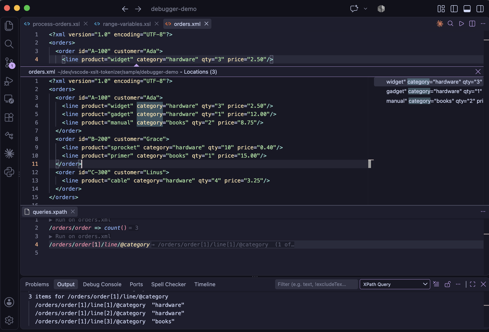
Enter XPaths in the query window to navigate the matching nodes.
Opening the query file
In the editor of an XML file, click the search button in the editor's title bar, or run
XML: Find Nodes with XPath... - from the Command Palette, the XML
Selection submenu of the editor's context menu, or the XML: Select Element...
quick pick (⇧⌘2 / Ctrl+Shift+2).
The query file, queries.xpath, opens in an editor group below the XML file, a quarter of its
height. A new query file starts with an expression for the XML file's root element, such as
/orders. There's one query file for each workspace, kept by VS Code, so your expressions are
there next time.
Writing expressions
The query file has several expressions, separated by blank lines. An expression can take several lines,
with no blank line within it, and can have comments, (: like this :).
As in any XPath file, expressions are highlighted and checked as you type, and auto-completion includes
the names of the elements and attributes in the XML file. Each expression is checked on its own.
Namespaces
The namespaces declared on the XML file's root element can be used without declaring them:
a name without a prefix matches an element in the root element's default namespace - so for
<orders xmlns="urn:orders">, //order finds its order
elements
a prefix declared on the root element, e.g. xmlns:x="urn:extra", can be used as it is:
//x:note
For another namespace - one first declared further down, or with a prefix of your choosing - start the
expression with a declare namespace line:
To start from a node in the XML file, put the cursor on it - on an element or an attribute - and press
⌥G / Alt+G
(XML: Add XPath Location to Queries). Its location, such as
/orders/order[2]/@id, is added to the end of the query file, with the cursor on it, ready to
run or change. If it's already in the query file, the cursor moves to it. With the cursor on no node, the
query file is just opened.
In the query file, at the start of an expression, the same location is offered by auto-completion - type
/, or press ⌃Space / Ctrl+Space.
It's the first suggestion, marked cursor in orders.xml. The XML file must be shown in an
editor.
Running an expression
Above each expression, on the blank line before it, is ▶ Run on orders.xml, naming the
XML file it runs on. Click it to run the expression, or press ⌘Enter /
Ctrl+Enter to run the expression at the cursor. The text in the XML
file's editor is used, including any changes not yet saved.
If Saxon reports an error, such as a syntax error, it's shown in the Problems panel, at the place in the
expression where Saxon found it.
Results
After each expression run, its result is shown in brief, at the end of its last line:
→ /orders/order[1]/@id (1 of 3) - the location of the first node found, and how many
there are
= 3, or = ('pen', 'ink', 'pad') - values, written as XPath literals and cut
short if they're long
= () nothing found - an empty sequence
Click it to see the whole result in the XPath Query output panel, with each item on a
line of its own. A map, array or function is written on one line, e.g.
map{"a":[1,"two",true()]} or fn:count#1 - to see part of a large map, change
the expression to select it.
When the result has nodes, the XML file's editor shows the first, with the nodes listed beside it, as
VS Code lists references. Click one to go to it, or press F4 /
⇧F4 to go to the next or previous node. The name of an element or
attribute is selected, and for a text node, its text.
Switching between XML files
Expressions run on the XML file you were last in. Click into another XML file's editor, and
▶ Run names that file: run the same expressions on it, as you would search it with
Find. The checks and auto-completion in the query file follow the switch, for the new file's names and
namespaces.
The results shown after the expressions are those for the file they'd run on. Switch back to an
earlier file to see its results again.
This is separate from the XML context file shown in the status bar for Quick
Run and tasks: switching between XML files doesn't change it.
Limitations
Each run starts Java, so it takes about a second.
Results shown after the expressions aren't kept when VS Code is closed.
XPath Notebooks
This section describes DeltaXignia's XPath Notebook extension for Visual Studio Code. Here we cover the fundamentals
of using XPath 3.1 in a Visual Studio Code Notebook.
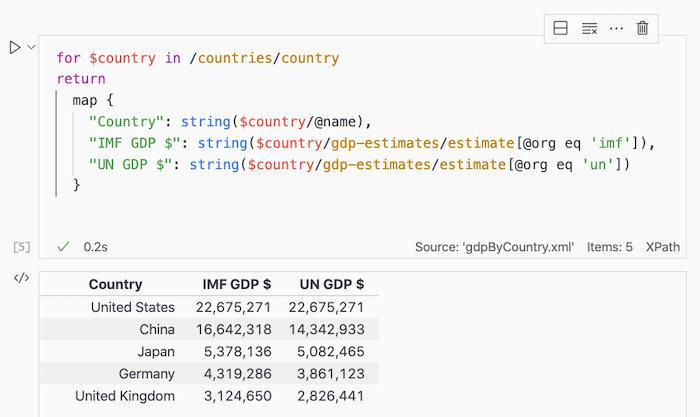
Why use an XPath Notebook?
XPath Notebooks are used for a wide range of purposes, including:
Quick analysis of XML or JSON
Learning and experimenting with XPath
Tutorials on XPath
Tutorials on a specific XML or JSON format
Quick Start
For this guide, we're assuming you've already installed the XPath Notebook
extension for VS Code.
Open any XML (or JSON) source file in VS Code to set this as the context
item for XPath expressions in an XPath Notebook. The most recent XML/JSON file opened is used.
3. Create and save a new XPath Notebook
From Visual Studio Code, open the Command Palette (⇧⌘P)
and execute the New XPath Notebook command.
A new XPath Notebook with a Markdown cell and a Code cell is shown.
It is untitled at first, with an .xbook file extension.
Save this notebook in the usual way (⌘S),
keeping the .xbook extension.
4. Edit and execute a new code cell
To add a new XPath code cell, press the + Code button at the top of the notebook.
In the new code cell, enter the /* XPath expression, then press ^Enter
to execute the cell.
The result cell is shown immediately below the Code cell.
AI Assistants
AI coding assistants in Visual Studio Code - such as GitHub Copilot or Claude Code - can make good use of the
XSLT/XPath extension. They don't need anything special from it: the extension's problems, documentation notes
and debugging output are all in forms that assistants read and write well.
Fixing problems
The problems reported by the extension's linter are standard Visual
Studio Code diagnostics, shown in the Problems panel. They identify the exact symbol at issue - an unresolved
variable, a function called with the wrong number of arguments, a record field that doesn't exist - so an
assistant that reads the diagnostics can explain and fix them precisely, and check its own changes the same way.
For example, GitHub Copilot can include the problems with #problems in a chat prompt, or fix a
problem from its Quick Fix menu, and Claude Code reads them through its Visual Studio Code integration.
The problems are kept up to date for every stylesheet open in an editor - not only the active one. An
assistant usually changes files while your cursor is in another, so a stylesheet it changes is checked again,
whether it's shown beside the active editor or in a tab that isn't shown, and the assistant sees the problems
its change caused. When it changes several stylesheets at once, each is checked with its own declarations,
XSLT version and imports, so no problems are reported that aren't there.
Documentation notes
XSLT 4.0 documentation notes - xsl:note format="xdoc-md" - use
Markdown with @param and @return tags, in the style of Javadoc: a format that
assistants already know. An assistant can read a function's note to understand it, and can write notes too - for
example, when asked to document the functions in a stylesheet. As the extension checks the
@param tags against the parameters, a missing or misnamed parameter in a note is reported
straight away.
Debugging output
The output of xdm:debug() in xsl:message is plain, labelled
text: each variable's value in XPath syntax, with its type where it isn't obvious, and each node with its
path. Copied from the terminal into a chat, it gives an assistant the actual values to reason about, rather than
a description of the problem.
Running XSLT
Quick Run creates ordinary tasks in the workspace's tasks.json
file, and each task shows the Saxon command line it runs in the terminal. An assistant that can run commands
can run a transform in the same way.
The Agents window
Visual Studio Code's Agents window, for running agent sessions and reviewing their changes, only runs the
extensions on a list chosen by Microsoft, and the XSLT/XPath extension isn't on it yet. Without the extension,
XSLT files in the Agents window have plain XML highlighting, with none of the extension's features - and if
Red Hat's XML extension is installed, it may report errors against its XSLT 3.0 schema. To run the extension
in the Agents window, add this to your user settings - see
Settings:
The extension doesn't yet provide an MCP server or language model tools, so an assistant can't ask it directly
for information - for example, to check a file that isn't open, to find where a symbol is declared, to list the
fields of a record type, or to show the imports of a module. Assistants that run outside Visual Studio Code, such
as command-line agents, only see the extension's problems if they can read Visual Studio Code's diagnostics.
Problems are only reported for files open in an editor, as by most language extensions: a stylesheet an
assistant changes that isn't open has none until it's opened. Tools for assistants may be added in a future
release.
XSLT 3.0
XSLT 3.0, published by W3C on 8 June 2017,
is the current W3C Recommendation for XSLT, alongside XPath 3.1. This extension
supports XSLT 3.0, and also XSLT 4.0 as implemented in Saxon 13.
Learning XSLT 3.0
The online W3C documentation for XSLT 3.0, along with its XPath 3.1 sub-language, comprises 3 main parts:
While the size of each part of the XSLT specifications may appear daunting at first, each part is well-structured, with a Table of Contents
panel that makes it easy to navigate. Many code samples are included with the specification.
Offline Reading Material
There are no published books for XSLT 3.0, but the XSLT 2.0 and XPath 2.0 Programmer's Reference
by Michael Kay
is frequently recommended. XSLT 3.0 is a significant enhancement to XSLT 2.0 but it builds on the fundamental principles and language in XSLT 2.0.
Video Tutorials
A set of video tutorials by Dimitre Novatchev is available:
This extension integrates with the Saxon XSLT processor by Saxonica. Stylesheets are run with
XSLT tasks or Quick Run, using the command-line
interface of SaxonJ (Java), SaxonJS (JavaScript) or SaxonC (C/C++).
Saxon is probably the most popular/ubiquitous XSLT 3.0 processor.
It publishes specification conformance data
and supports many platforms.
A free open source version, Saxon-HE, is available along with
paid-for 'Professional' and 'Enterprise' variants. These are
summarised in a feature matrix.
Saxon PE and EE 12.8 or later, run with syntax extensions, also accept some XSLT 4.0 features in an
XSLT 3.0 stylesheet: named item types - with record and enumeration types - and xsl:note.
To edit such stylesheets with the same support as for XSLT 4.0, enable the
XSLT.validation.xslt30ItemTypesAndNotes setting - see
XSLT 4.0 Item Types and Notes in XSLT 3.0.
For the full set of XSLT 4.0 features implemented in Saxon 13, see XSLT 4.0.
Altova's RaptorXML server supports XSLT 3.0 - no integration with
Visual Studio Code is available as Altova offer their own paid-for
XML/XSLT development solution. No XSLT standards conformance
data is published for this processor.
DeltaXignia's XSLT/XPath language extension provides full language support for the XSLT 4.0 and XPath 4.0
features implemented in Saxon 13, as documented
here: type-aware
auto-completion, checks, hover help and refactoring, as well as syntax highlighting.
Note that, given the independent release cycles for Saxon and the XSLT 4.0 draft, there will be
differences between the implementation and the draft specification. Some parts of the
specification are likely to change significantly before it is finalized.
We will endeavour to keep this extension up to date with the latest Saxon XSLT 4.0 implementation.
Earlier versions of XSLT 4.0 will not be supported for auto-completion and linting.
Editing XSLT 4.0
The version attribute on the stylesheet root element controls the
XSLT version supported by the linter and for auto-completion. When the
version attribute on the stylesheet root element is set to 4.0,
auto-completion for XSLT instructions and attributes and XPath functions will be included.
In an XSLT 3.0 stylesheet, the linter reports XPath 4.0 syntax as an error.
For Saxon PE or EE 12.8 or later, run with syntax extensions, XSLT 4.0 item types - with record and
enumeration types - and xsl:note can also be enabled in XSLT 3.0 stylesheets: see
XSLT 4.0 Item Types and Notes in XSLT 3.0.
XPath files, with the .xpath extension, are always treated as XPath 4.0.
XSLT 4.0 support
The syntax highlighter, linter and auto-completion support:
New XPath 4.0 syntax - the pipeline -> and mapping arrow
=!> operators, the method call operator =?>, e.g.
$shape =?> area() - with the fields of a record type suggested after it - the
× and ÷ operators, braced if expressions, map constructors without the
map keyword, string templates, and the new -or-self axes
Literals and bindings - hexadecimal and binary numeric literals, and _
digit separators, e.g. 0xFF_FF, 0b101 and 1_000_000; QName
literals, e.g. #xs:integer; positional variables, e.g.
for $x at $i in $items return ...; for key and value map
bindings, e.g. for key $k value $v in $map return ...; and typed for,
let and some bindings, e.g. let $n as xs:integer := 3
New item types - choice types, such as (xs:date | xs:time), and the
enum, record, fn and jnode types
Named item types - declared with xsl:item-type, with checks on the
names used, go to definition and find references
Function syntax - fn and focus functions, keyword arguments such as
ex:area(scale := 2), optional parameters (xsl:param required="no") and
partial function application
Functions in no namespace - an xsl:function name without a prefix, e.g.
name="double", called as double(2) - a Saxon 13 extension, not available in
Saxon-HE. A function with the name and arity of a built-in function, e.g. count, replaces
it in calls without a prefix, so is reported as a warning.
JNodes - path expressions on trees of maps and arrays, with jtree(),
jkey(), jvalue() and get(...) steps
New instructions - snippets for xsl:switch, xsl:array and
xsl:select, template rules declared within an xsl:mode (enclosed
modes), and xsl:record, with its attributes completed and checked against the record
type - see Building records
Features in the XSLT 4.0 draft that Saxon 13 doesn't implement - such as extensible record types
- are reported by the linter.
Some of the more significant XSLT 4.0 features have their own pages:
Records and Enums - auto-completion, checks and
refactoring for record and enumeration types, including xsl:switch on an
enumeration
JSON and JNodes - path expressions on JSON, with
auto-completion, checks and hover help for JNodes with a record type
Code Documentation - documenting functions and
templates with xsl:note, for hover help and signature help
Running XSLT 4.0
XSLT 4.0 stylesheets run with Quick Run, or with an
XSLT task. Saxon needs the --allowSyntaxExtensions:on
configuration property for XPath 4.0 syntax. This is controlled by the allowSyntaxExtensions40
task property:
auto (the default) - on, unless the Saxon jar file, or SaxonC path, is for Saxon-HE
on - always on
off - never on
Other Editors for XSLT 4.0
The Oxygen XML editor also provides
language support for XSLT 4.0, with its own bundled Saxon implementation.
While Oxygen does need to be purchased,
it has the advantage of including Saxon-EE built-in, so you will not need to purchase Saxon
separately. Oxygen XML provides an integrated solution for XML developers
and content authors, and hosts an array of other features.
Records and Enums
XPath 4.0 adds record types, for maps with a known set of fields, and
enumeration types, for strings with a known set of values. XSLT 4.0 adds the
xsl:item-type declaration to give these types names.
When a variable, parameter or function result is declared with one of these types, the XSLT/XPath
extension uses the declared type for auto-completion, linting, hover help and navigation - for example,
to list the fields when building a map, or the values of an enumeration inside a string literal.
These features are enabled when the stylesheet has version="4.0". See the
XSLT 4.0 page for the XSLT 4.0 features supported.
For Saxon PE or EE 12.8 or later, run with syntax extensions, they can also be enabled for XSLT 3.0
stylesheets, with the setting XSLT.validation.xslt30ItemTypesAndNotes - see
XSLT 4.0 Item Types and Notes in XSLT 3.0. That page also
describes converting Saxon's earlier saxon:type-alias and tuple(...) syntax.
Declaring types
A record type lists its fields, each with an optional type. A field name followed by ?
is optional. An enumeration type lists its values as string literals:
<xsl:item-type name="address" as="record(city as xs:string, postcode? as xs:string)"/>
<xsl:item-type name="person" as="record(name as xs:string, age as xs:integer, address as address)"/>
<xsl:item-type name="colour" as="enum('red', 'green', 'blue')"/>
A type can also be written inline in an as attribute, for example
as="record(x as xs:double, y as xs:double)".
In an attribute value, quotes within a type can be written as references, as Saxon allows - for example
as="enum("it's", 'is')" or a field name quoted with
' - and the extension reads them as the quotes they stand for.
Auto-completion for types
Within an as attribute, and after instance of, castable as
and the other type operators, the names of declared item types are offered with the built-in
types.
The record(...) and enum(...) suggestions insert a snippet with
placeholders for the fields or values.
Checks on declarations
An item type name that isn't declared is reported, as are duplicate declarations and a type that
refers to itself (directly or through other named types).
A duplicate field name in a record type is an error, as in Saxon. A duplicate value in an
enumeration type is a warning, with a Remove duplicate enum value quick fix.
Extensible record types, such as record(a, *), have been dropped from XPath 4.0
and are reported as an error.
Go to Definition (F12) and Find All References
(⇧⌥F12) work for item type names.
Building records
A record is built with a map constructor, or with the xsl:map or xsl:record
instruction. Wherever the
record type is known, the extension helps you complete the map and checks it against the type.
Map constructors
In the select attribute of a declaration with a record type, type { (or
map {) and accept the suggestion to insert a complete map constructor, with an entry for
each required field - when the record has optional fields, a second suggestion includes them too:
Each __TODO.field placeholder is reported as a warning until it's replaced
with a value. A double-click selects the whole placeholder, ready to type over.
After typing , at the end of an entry, the suggestions list the fields that aren't in
the map yet, including optional fields.
The xsl:map instruction
Where a record is built with xsl:map, for example in the content of an
xsl:variable with a record type, typing < offers an
xsl:map suggestion with an xsl:map-entry for each required field (or, as a
second suggestion, for all fields). Inside an
existing xsl:map, the xsl:map-entry suggestions are named after the fields not
yet added, for example xsl:map-entry 'age', and the key attribute offers the
field names.
The xsl:record instruction
The XSLT 4.0 xsl:record instruction builds a record from its attributes: each attribute
in no namespace is a field, with an XPath expression as its value. Its record type is the type in its
own xsl:as attribute, or else the declared type of its value, as for xsl:map:
Auto-completion - typing < offers an xsl:record
suggestion with an attribute for each required field, e.g. xsl:record person: required
fields, and a second suggestion with all fields. Within the start tag, the fields not yet
added are offered as attributes, required fields first, and within the content, typing
< offers an xsl:map-entry for each field not yet added. A field whose name
isn't an NCName, e.g. 'first name', is added as an xsl:map-entry child.
Checks - as for a map: an attribute that isn't a field is a warning, a literal
value of the wrong type is an error, and a missing required field is an error, with the Add
missing record fields quick fix. A field can also be added by an xsl:map-entry
child - and when other content may add fields, missing fields aren't reported.
Renaming - renaming a field renames its xsl:record attributes, and Find
All References lists them.
Checks on records
Missing fields - a required field that's missing is an error, with an
Add missing record fields quick fix that adds an entry, with a placeholder, for
each one.
Unknown fields - an entry for a field that isn't in the record type is a
warning. For a map constructor key, or an xsl:record attribute, there's a
Change to 'name' quick fix for each field not yet in the map, closest
name first - e.g. Change to 'name' for 'nam'.
Field values - a literal value of the wrong type, such as a string for an
xs:integer field, is an error.
Duplicate keys - two entries with the same literal key are an error, in any map
constructor or xsl:map, whether or not it has a record type - except in an
xsl:map with a duplicates attribute, which handles them, where they're a
warning.
Where the record type comes from
Maps are checked, and completed, where their type is declared:
the select or content of an xsl:variable, xsl:param or
xsl:with-param with an as attribute - for an xsl:with-param
without one, the type of the called template's parameter is used
the result of an xsl:function with an as attribute - its last
xsl:sequence
xsl:sequence and xsl:select with an as attribute
the arguments of calls to user-defined functions, including keyword arguments such as
ex:move(point := { ... }) and the left-hand operand of the arrow operators
a typed let binding, such as let $p as person := { ... }
Using records
Lookups
After the ? lookup operator on a value with a record type, the suggestions list the
record's fields. This works for variables, calls to functions with a declared record result, and
chains of lookups such as $p?address?city. A lookup of a field that isn't in the record
type is a warning.
Hover and navigation
Hovering over a field name - in a lookup, a map constructor key or the key of an
xsl:map-entry - shows the field's declaration. Go to Definition on a field name goes to
the field in the record type.
Hovering over the name of a named item type - where it's used, or on its declaration - shows its
declaration, with its values for an enumeration type. When the xsl:item-type has a
documentation note, the note is shown too, and a field's
@field text is shown when hovering over the field, and with the field in the
auto-completion suggestions.
Hover over a record field in a lookup, e.g. $shape?colour, showing the field's
declaration and its @field text from the xsl:item-type's documentation note.
Renaming a field
Rename Symbol (F2) on a field name - in the record type, a lookup, a map
constructor key, the key of an xsl:map-entry, an xsl:record
attribute, or an @field tag
of a documentation note - renames the field, and all its references. Find All References
(⇧⌥F12) lists them.
Only the field of that record type is renamed - not a field with the same name in another
record type.
The references are found in the stylesheet, the modules it includes or imports, and - from the
workspace's modules - each stylesheet that imports or includes it, with the modules they use. So a
rename in a module of types reaches the stylesheets that use them.
A quoted field name keeps its quotes, e.g. 'unit name'. A new name must be an NCName,
unless the field's name isn't one.
Path steps on records (JNodes)
XPath 4.0 path expressions can navigate maps and arrays as trees of JNodes, e.g.
jtree($p)/address/city. Field names are suggested, and checked, for steps after
jtree($p)/, and after a variable declared as a JNode for a record type, such as
jnode(*, person). See JSON and JNodes.
Refactoring: Extract record type
The Extract record type refactoring creates a record type from an existing map - for
example, when updating code written for XSLT 3.0. It's offered when the stylesheet has
version="4.0", or with the XSLT.validation.xslt30ItemTypesAndNotes
setting:
Select a map constructor or xsl:map whose keys are string literals - or simply
place the cursor on the start tag of the xsl:variable, xsl:param,
xsl:with-param, xsl:function, xsl:sequence or
xsl:select that it's the value of.
Open the refactorings with the 💡 light-bulb, or ⌘., and choose Extract record type.
An xsl:item-type declaration is added for the record type, and the declaration's
as attribute is set to it - replacing a generic type such as map(*). Field
types are taken from literal values, and a nested map becomes a nested record type.
The new type is named record-type, and Rename Symbol is started so you can give it a
meaningful name.
If an existing xsl:item-type already has the same field names, a Use record
type 'name' refactoring is also offered, in the Rewrite section of
the list. It sets the as attribute to the existing type without adding a
declaration.
Extract record type is also offered for a record(...) type written
inline in an as attribute - with the cursor on it, or a selection within it - except
the whole type of an xsl:item-type. The innermost record type is replaced by the name of a
new xsl:item-type, named after the field whose type it is, if any, and Rename Symbol is
started:
<xsl:item-type name="person" as="record(name as xs:string, address as record(city as xs:string))"/>
becomes:
<xsl:item-type name="address" as="record(city as xs:string)"/>
<xsl:item-type name="person" as="record(name as xs:string, address as address)"/>
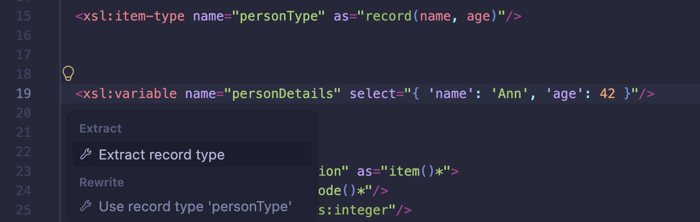
Before refactor: The two 💡 refactorings for a candidate record-type variable.
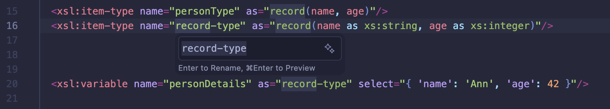
After refactor: a prompt to rename the record-type now it's declared and set on the variable.
Enumeration types
Auto-completion for values
Where an enumeration type is expected, typing a quote character offers the enumeration's values. This
applies to:
the select of an xsl:variable, xsl:param or
xsl:with-param declared with the type (or xs:boolean, for
true() and false())
arguments of calls to user-defined functions whose parameter has the type, and typed
let bindings
record fields with the type, in map constructors
the test of an xsl:when in an xsl:switch - see below
A string literal that isn't one of the values is reported as an error.
Hovering over the name of an enumeration type - or a global variable or parameter, a parameter of a
function or template, or a record field, with the type - lists its values - on one line for a few values, otherwise as a list. For a type declared as another, or as a
choice of enumeration types, the values are those it resolves to.
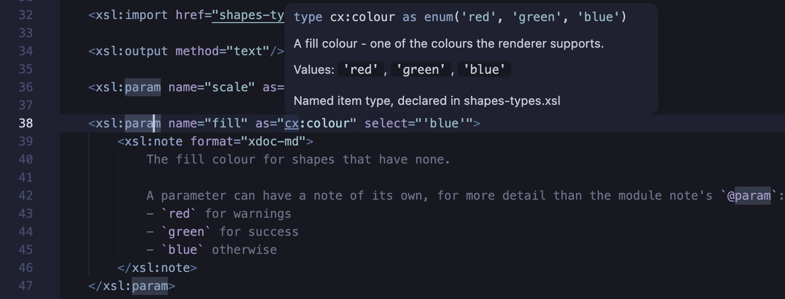
Hover over the name of an enumeration type, showing its values
Renaming a value
Rename Symbol (F2) on an enumeration value - in its enum(...)
declaration, or a string literal for it - renames the value and the string literals that refer to it:
variable values, function arguments (including keyword arguments), record field values in
map constructors, typed let bindings and xsl:switch cases. Find All References
(⇧⌥F12) lists them.
Only the values of that type are renamed - not the same value in another enumeration type. An
inline enum(...) type is identified by its values.
The value is renamed in imported modules too.
A new name that's already a value of the type is rejected. A quote in the new value must be
doubled, e.g. don''t.
xsl:switch on an enumeration
The XSLT 4.0 xsl:switch instruction selects an xsl:when by comparing a
value with each test. When the select has an enumeration type - a variable,
function call or record field lookup with a declared type - the extension works with its values.
Quick Fix options shown for xsl:switch on an enum type.
Missing values - when an enumeration value has no xsl:when, and there's
no xsl:otherwise, the xsl:switch is marked with the information message
xsl:switch has no xsl:when or xsl:otherwise for the enumeration values: .... Its two quick
fixes add an xsl:when for each missing value:
Add missing xsl:when cases with select - e.g.
<xsl:when test="'green'" select=""/>
Add missing xsl:when cases with content - e.g.
<xsl:when test="'green'">...</xsl:when>
Values that never match - a test value that isn't one of the
enumeration's values, or that an earlier xsl:when already tests, is a warning, as the
xsl:when never matches it.
Auto-completion - inside an xsl:switch, the completion list offers an
xsl:when for each value not yet tested.
JSON and JNodes
XPath 4.0 path expressions can navigate JSON - maps and arrays - as they do XML. The
jtree() function wraps a map or array in a tree of JNodes, with a JNode
for each map entry and array member, so a path such as $order/customer/name works on
JSON data, with predicates, the descendant and parent axes, and the other features of path
expressions.
When a JNode is declared with a record type, for example
jnode(*, order), the XSLT/XPath extension knows which fields each step can reach. It checks
each step, offers the field names as auto-completion suggestions, and shows each field's type and
documentation on hover.
JNodes need version="4.0" and Saxon-PE or Saxon-EE 13, run with syntax extensions
enabled (Quick Run enables these for a version="4.0" stylesheet). Saxon-HE 13 doesn't
support XPath 4.0 syntax. In an XSLT 3.0 stylesheet, the jnode(...) item type and the
get(...) node test are reported as needing XPath 4.0.
Navigating JSON with JNodes
A JNode tree is made with jtree(), from a map or array - for example the result of
json-doc() or parse-json():
Name steps select map entries by key, e.g. $order/customer/name.
* selects every entry of a map, or every member of an array, e.g.
$order/lines/*.
get(...) is the node test for a key that isn't an NCName, such as
get('$ref') or get('first name'), or for an array member by position,
such as get(1). The extension reports get('a') used on its own, as a
function call, as a call to an unknown function.
Axes work as they do for XML: $schema//get('$ref') finds every
$ref at any depth, and $line/../../currency goes up from an order line,
through the lines array, to the order.
jkey() gives a JNode's key - the map key, or the position of an array
member - and jvalue() gives the value it wraps. Where a value is atomized, such as
in an arithmetic expression or a text value template, a JNode gives its value, so
$line/quantity * $line/unit-price works without jvalue().
A JNode is matched with the jnode() item type, e.g.
$tree/type instance of jnode(type). jnode() is offered in auto-completion
for as attributes in XSLT 4.0.
JNodes with a record type
A variable, parameter or function result declared as jnode(*, T), where
T is a record type, is a JNode whose value is a T. A named item type can be used
too, e.g. <xsl:item-type name="order-node" as="jnode(*, order)"/>. Child steps
from the JNode are then auto-completed and checked against the record's fields, at any depth:
Auto-completion - after a /, the suggestions list the record's
fields. Typing $order/customer/ lists the fields of the customer record
type.
Checks - a step that isn't a field is a warning, e.g. Child step 'nam' -
this is not a field of the record type: customer for $order/customer/nam. A
? lookup on the JNode, e.g. $order?id, is checked in the same way.
Hover - hovering over a field name in a step, such as unit-price in
$line/unit-price, shows the field's type. Its @field text is shown too,
from the xsl:item-type's documentation note.
Hovering over the type name in jnode(*, order) shows the record type, with its
fields and documentation.
Child steps after jtree($p)/, where $p has a record type, are
auto-completed and checked in the same way.
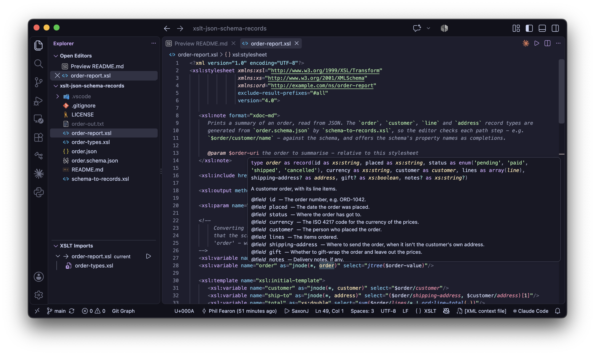
Hovering on order in jnode(*, order)
shows the record type, imported from a module of types generated from a JSON Schema: its fields,
their types, and each field's description from the schema.
Maps need jtree() before '/'
A / step needs a JNode on its left, not a map. Saxon 13 reports XPTY0019 for a step
such as $order-value/id, where $order-value is a map with a record type, so
the extension reports this as an error. The message suggests converting the map first, e.g.
jtree($order-value)/id. Alternatives are a lookup, $order-value?id, or a
variable declared as a jnode(*, order), as above. A step after a lookup, such as
$p?address/city, is reported in the same way.
Debugging: xdm:debug() shows JNode paths
The xdm:debug() function shows a JNode's location in its tree, as
an XPath path from the tree's root, above the value it wraps - in the same way it shows the location
of an XML node. For an order line, this is a path such as /lines/*[2], so you can see
which part of the JSON each value came from:
The xdm:debug variables auto-completion for xsl:message inserts a call
like this one, with every in-scope variable. See Print Debugging.
Things to know about JNodes and record types in Saxon 13
A jnode(*, T) type matches only an instance of
T. A map with keys that T doesn't declare isn't an instance, so
jtree(json-doc('order.json')) doesn't match jnode(*, order) when the data
has extra properties. Converting the value to the record type first - as for
$order-value above - drops the extra keys, at every depth, and fails if a required
field is missing or has the wrong type.
No recursive item types. An xsl:item-type can't refer to itself,
directly or through other types (Saxon reports SXTA0001). A field that would refer back, such as
a bundle of order lines within an order line, has to be map(*) or
array(map(*)) instead, so the steps after it aren't checked.
JSON numbers are xs:double.json-doc() and
parse-json() give every JSON number as an xs:double, so a record field
for a number must be xs:double - xs:integer would reject the data. A
JSON null is an empty sequence, so a nullable field needs an occurrence indicator,
e.g. xs:string?.
No ?? operator. Saxon 13 doesn't support the deep lookup operator,
so use the descendant axis on JNodes instead, e.g. $schema//get('$ref').
schema-to-records.xsl reads a JSON Schema, order.schema.json, as JNodes,
and writes order-types.xsl: an xsl:item-type for the schema and for each
of its $defs. Each property's description becomes an @field
in the type's documentation note, so it's shown on hover.
order-report.xsl includes order-types.xsl, and prints a summary of
order.json, using jnode(*, order), jnode(*, line) and other
typed JNodes.
Run each stylesheet with Quick Run, choosing 'None' as the XML context
file, so it starts from xsl:initial-template. Then, in order-report.xsl,
try:
typing $order/customer/ to see the customer's fields as suggestions
changing $order/customer/name to $order/customer/nam, to see the
warning
hovering on unit-price in $line/unit-price, or on line
in jnode(*, line), to see the documentation taken from the schema
changing $order/id to $order-value/id, to see the
error that suggests jtree()
adding a property to customer in order.schema.json, running
schema-to-records.xsl again, and seeing it offered after
$order/customer/
The sample's README describes how each JSON Schema keyword maps to an XPath type.
Code Documentation
XSLT 4.0 adds the xsl:note element, for documentation within a stylesheet. The
XSLT/XPath extension supports notes written in a simple format, xdoc-md: Markdown
text followed by tags such as @param and @return, in the style of Javadoc
and xqDoc.
A note in this format, as the first child of an xsl:function, a named
xsl:template or an xsl:item-type, is shown in hover help wherever the
declaration is used - including from other stylesheet modules - and on the declaration's own name. For
functions and templates, it's also shown in signature help. For a record type, declared with
xsl:item-type, the note can also describe each of the record's fields.
A module note, as the first child of the xsl:stylesheet,
describes the module and its global parameters and variables - and a global parameter or variable can
have a note of its own, for more detail.
The XSLT 4.0 specification allows xsl:note anywhere, with any attributes and content, and
leaves the format of the documentation open. The format="xdoc-md" attribute is the
extension's convention for the notes it shows: XSLT processors ignore it, with the rest of the note.
These features are enabled when the stylesheet has version="4.0" - and for XSLT 3.0,
see Notes in XSLT 3.0.
Writing a documentation note
Set the format attribute to xdoc-md. The text before the first tag is a
description, in Markdown. Each tag starts a new line, and continues on the following lines up to the
next tag:
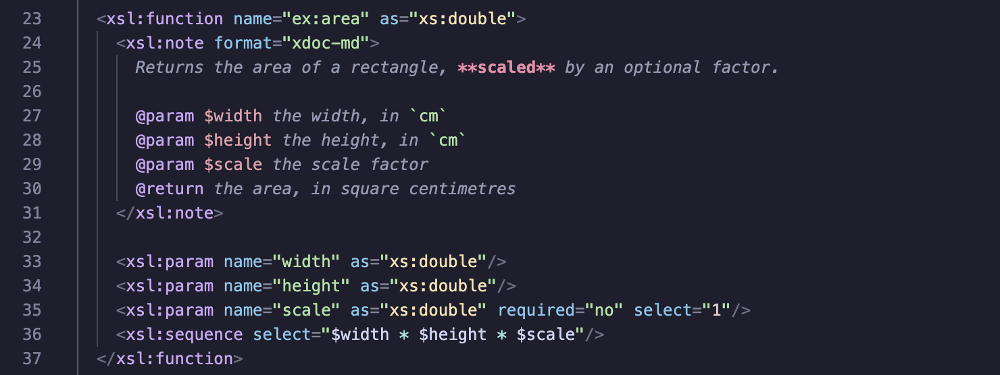
The xdoc-md tags within xsl:note are highlighted along with any markdown used
Tags
@param $name - a parameter of a function or template - or, in a module note, a global
parameter
@return - the result of a function or template
@field name - a field of a record type, for an xsl:item-type
@variable $name - a global variable, in a module note
@deprecated - why it should no longer be used, and what to use instead
@error - an error a function or template may raise
@author and @version - for a module note
@field isn't an xqDoc tag: the extension adds it, in the same style, for documenting
records. A field name that isn't an NCName is quoted, as in the record type - for example
@field 'unit name' e.g. cm.
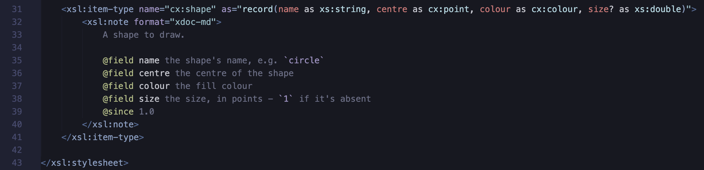
A note on an xsl:item-type, with an @field tag for each field of its record type.
Markdown
The description and tag text can use Markdown: **bold**, *italics*,
`code`, [links](https://example.com) and # headings.
As the note is XML, the characters < and & must be escaped as normal XML, for
example <. Alternatively, put text containing markup in a CDATA section: its content
is shown exactly as written.
Adding a note
With the cursor on the start tag of an xsl:function, xsl:template,
xsl:item-type, the xsl:stylesheet, or a global xsl:param or
xsl:variable, that has no xsl:note, choose Add documentation
note from the refactorings (💡 or ⌘.).
A note is inserted as the first child, with:
an @param for each parameter, and an @return for a function (or a
template with an as attribute)
for an xsl:item-type with a record type, an @field for each field
for a module note, an @param or @variable for each global parameter or
variable that has no note of its own
An empty element, e.g. <xsl:item-type .../>, gets an end tag for the note.
Press Tab to move between the description placeholders.
Notes can also be added with auto-completion, after <:
xsl:note inserts a note on one line. It's offered within any XSLT element, and
within literal result elements - XSLT 4.0 allows xsl:note anywhere.
xsl:note xdoc-md inserts a documentation note. It's offered where one is used - within
a function, named template, item type, global parameter or variable, or at the top level for the
module note - and when there isn't one yet. There, it's listed first, and preselected.
Within the start tag of an xsl:note, format is offered as an attribute, and
xdoc-md as its value.
Within a note, typing @ offers the tags that apply: @see, @since
and @deprecated for every note, with @field for an
xsl:item-type; @param, @return and @error for a
function or template; and @param, @variable, @author and
@version for a module note. The note of a global xsl:param or
xsl:variable is offered only @see, @since and
@deprecated. After @param, the parameter names without an
@param yet are offered - and likewise after @field and @variable.
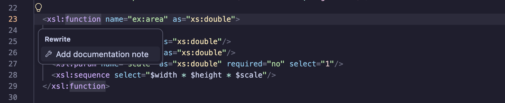
The code action 'Add documentation note' is offered on selecting a function element.
Where notes are shown
Hover help - on a call to the function, or on the name of an
xsl:call-template, the note's description and tags are shown with the signature. On the
name of an xsl:with-param, the parameter's @param text is
shown.
Hover help on item types - on a named item type where it's used, e.g. in an
as attribute or after instance of, the note is shown with the type's
declaration.
Hover help on declarations - on the name of an
xsl:function, named xsl:template or xsl:item-type, the note
is shown just as for a use of it. On the name of an xsl:param of a function
or template, the parameter's @param text is shown.
Record fields - the @field text is shown in hover help on a field,
e.g. r in $c?r, and with the field suggestions of auto-completion: for a
lookup, a child step on a JNode, a map constructor key and an xsl:map-entry. For an item
type declared as another, e.g. as="cx:point", the other type's @field text
is used.
Variable references - on a reference to a global parameter or variable, e.g.
$scale, or the name of its declaration, its type and documentation are
shown - see Module notes. On a reference to a parameter of a function or
template, its @param text is shown.
Signature help - while typing the arguments of a function call, or the
xsl:with-param children of an xsl:call-template, the parameter hints show
the @param text for the current parameter.
Auto-completion - the xsl:with-param suggestions within an
xsl:call-template show the @param text for each parameter.
Notes on functions, templates and item types in included and imported stylesheets are shown too.
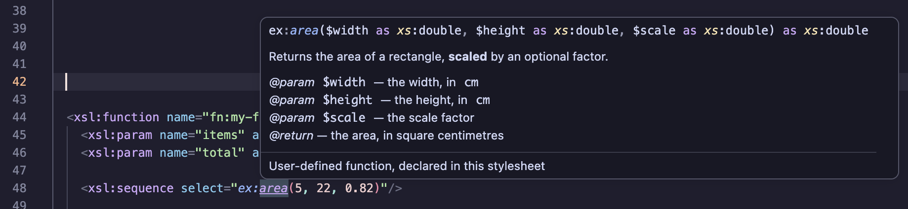
To see xdoc-md documentation on the function (or named template) hover over the referring code.
References to other declarations
A note can refer to a function, template, item type or variable declared elsewhere - after
@see, or as a Markdown code span anywhere in the note - using the XPath syntax for it:
my:area#2 - the function with that arity
my:area() or my:area - a function of any arity - or for my:area,
else a named item type or template
$scale - a parameter of the function or template the note documents, or else a global
parameter or variable
template my:draw - a named template
For example, @see my:area#2, or Uses `$scale` and `template my:draw`. In a code span,
a name without a prefix is only a reference as $name, name#2,
name() or template name, as code spans are used for other text too.
Navigation - Go to Definition and hover help work on a reference just
as on a use of the declaration, including declarations in imported and included modules.
Find references and rename - the references in notes are found, and renamed, with the
declaration - e.g. renaming my:area changes @see my:area#2 too.
Auto-completion - after @see, and within a code span, the declarations
are suggested, written so that they refer to them: parameters and variables, e.g. $scale,
functions by arity, e.g. my:area#2, then item types and templates.
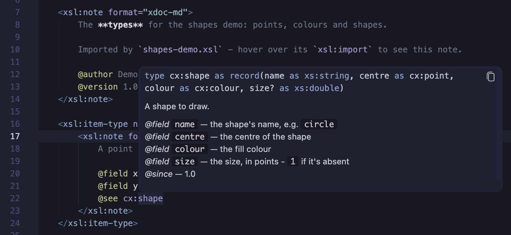
Hover on a reference in a note to review the referenced item's description.
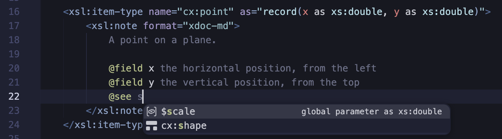
Auto-completion hints are triggered when adding a reference in a note.
Module notes
A documentation note as the first child of the xsl:stylesheet (or xsl:transform
or xsl:package) describes the module. Its tags can describe the global parameters and
variables briefly, so they don't need notes of their own:
<xsl:stylesheet ... version="4.0">
<xsl:note format="xdoc-md">
Draws shapes.
@param $scale the scale factor
@variable $origin the point all shapes start from
@author Ann
@version 1.2
</xsl:note>
<xsl:param name="scale" as="xs:double" select="1"/>
<xsl:param name="colour" as="cx:colour" select="'red'">
<xsl:note format="xdoc-md">The fill colour, used for **every** shape.</xsl:note>
</xsl:param>
For more detail, a global xsl:param or xsl:variable can have a documentation
note of its own, as its first child. It's shown in place of the module note's @param or
@variable text - so a module note can give a brief summary, and the parameter's own note the
details.
Hover help on variables - on a reference to a global parameter or variable, or
the name of its declaration: its type, its documentation, and for an enumeration type,
its values.
Hover help on imports - on the href of an xsl:import or
xsl:include: the module's note, and its path.
Preview - on the start tag of the module note: the note as it's shown for an
import of the module.
Rename - renaming a global parameter or variable renames its @param
or @variable tag too.
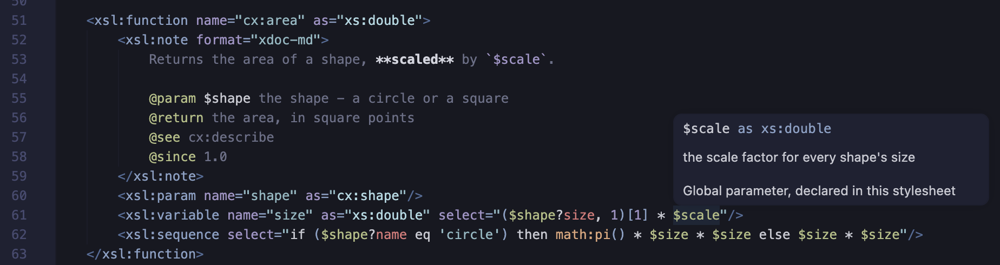
The hover on a reference to a global parameter, $scale, showing its @param text from the module note.
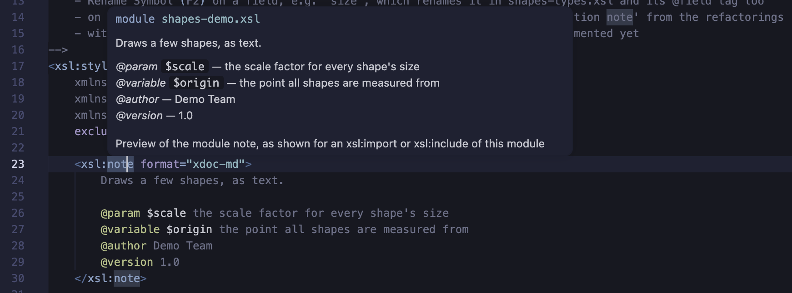
The hover on the start tag of a module note, previewing the note.
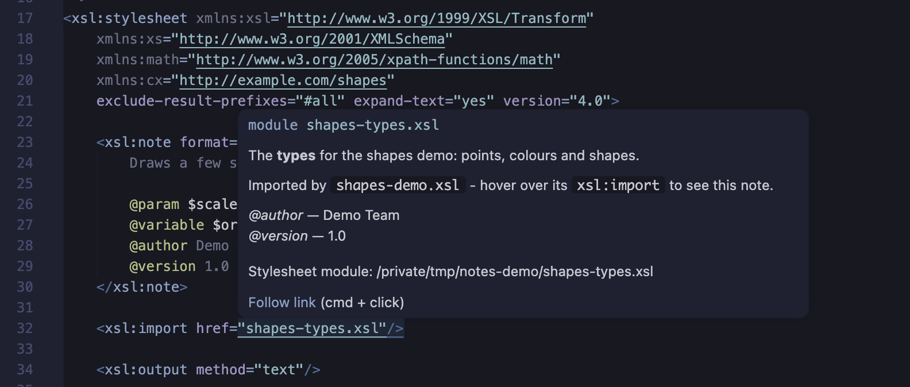
The hover on the href of an xsl:import, showing the imported module's note.
Notes in XSLT 3.0
Unless you're using a compatible Saxon version with syntax extensions enabled (see note below),
an XSLT 3.0 processor reports XTSE0010 for xsl:note, as an unknown XSLT
element - the workaround is just to exclude this with use-when="false()", which works with any processor.
In a stylesheet with version="3.0":
an xsl:note without a use-when attribute is a warning, with the quick fix
Exclude with use-when="false()"
the xsl:note completions and Add documentation note insert the note
with use-when="false()"
documentation notes are shown, highlighted and checked, as in XSLT 4.0
Highlighting Details
The content of a note is highlighted as documentation: tags, parameter and field names, code, bold and
italic text, headings and links each have their own semantic token type. The token types have fallbacks, so
they're highlighted in most color themes. To change their colors, add rules for the token types
xdocText, xdocTag, xdocParam, xdocCode,
xdocBold, xdocItalic, xdocHeading, xdocLink and
xdocCdata to the editor.semanticTokenColorCustomizations setting.
Notes as XML
The extension includes an Invisible XML grammar for its
documentation notes, xdoc-md.ixml.
With the XPath 4.0 invisible-xml() function, a stylesheet can use it to turn its notes into
XML - for example, to generate documentation for a library of functions.
Tag Checks
The @param tags are checked against the xsl:param elements of the function
or template, and the @field tags against the fields of the item type's record type:
an @param for a name that isn't a parameter, or an @field for a name that
isn't a field, is a warning
a second @param for the same parameter, or @field for the same field, is a
warning
when a note has @param tags, parameters without one are reported as information, with
an Add missing @param quick fix - and likewise fields without an @field,
with an Add missing @field quick fix
an @field in the note of a function or template, or of an item type that isn't a record
type, is a warning
an @param, @return or @error in the note of an
xsl:item-type is a warning
an @see reference that refers to no declaration, e.g. @see my:aera#2, is a
warning - but not other text, e.g. a URL, or a built-in function or type, e.g. fn:sum#1
In a module note, the @param and @variable tags are checked against the global
parameters and variables in the same way: when the note has @variable tags, global variables
without one are reported as information, with an Add missing @variable quick fix - as
for @param, with Add missing @param. A global parameter or variable with a
note of its own isn't reported as missing from the module note. @return and @error in a module note,
and @param, @variable, @return and @error in the note
of a global parameter or variable, are warnings.


 Refactoring with 'Extract to xsl:function' in full mode, referencing context-parameters $c.x, $c.p and $c.l
Refactoring with 'Extract to xsl:function' in full mode, referencing context-parameters $c.x, $c.p and $c.l